WELCOME TO BOSMARKET THEME
Firstly, a huge thanks for purchasing this theme, your support is truly appreciated!
This document covers the installation and use of this theme, reveals some answers to common problems and issues. We encourage you to read throughout this document if you are experiencing any difficulties. If you have any questions that are beyond the scope of document, please feel free to contact us via our Ticket Support System.
Bosmarket is an eCommerce WordPress Theme that is developed especially for shopping or multi-vendor websites. emarket is powered by entirely by WordPress, WooCommerce and compatible with WC Vendors, Dokan Plugin that helps you create multi-vendor sites with ease.
The theme is versatile, with multiple homepage designs, several different layout styles, tons of theme options and lots of eCommerce features that make website development an easy task.
In addition, emarket allows you to build unique and advanced layouts for your posts & pages using a drag-n-drop back and front end editors – Visual Composers. It also brings you a lot of features like RTL Layout Support, Stunning Home slideshow by Revolution Slider, Powerful Mega Menu, Color Swatches, Product Quickview, Featuring Product Page, Ajax Cart, Pro Search Box & others.
GETTING STARTED
To install this theme you must have a working version of WordPress already installed. If you need help installing WordPress, follow the instructions in WordPress Codex. Below are all the useful links for WordPress information.
- WordPress Codex – General info about WordPress and how to install on your server.
- First Steps With WordPress – General info about multiple topics about WordPress.
- FAQ New To WordPress – The most popular FAQ’s regarding WordPress.
To use the theme, please make sure you are running WordPress 4.7.x or higher, PHP 5.6 or higher, and MySQL 5.6 or higher.
- Check to ensure that your web host has the minimum requirements to run WordPress.
- You can download the latest release of WordPress from the official WordPress website.
- The latest version of WordPress is prefered.
- Always create secure passwords for FTP and Database.
- It is recommended to be on at least PHP 5.6 and preferably PHP 7.0.
The Recommended PHP Configuration Limits should be paid attention. In several cases, you may deal with problems related to low PHP configuration limits, such as: white screen, demo content fails when importing, empty page content and other similar issues.
The solution is to increase the PHP limits. You can do this on your own by editing the following lines in php.ini file in your root directory. This is not a file that comes with WordPress so if you are unfamiliar with it you should contact your web host about increasing those limits to a minimum as follows:
max_execution_time 360memory_limit 128Mpost_max_size 32Mupload_max_filesize 32M
Success Well done! If your site meets all these requirements, you can start enjoy Bosmarket theme now!
FILE STRUCTURE
After downloading the theme package on ThemeForest, when extracting it, you will see the files included as below:
Bosmarket theme package folder including:
- code folder contains: sw_bosmarket_theme_vx.x.x.zip, sw_bosmarket-child-theme.zip and folder data.
- doc: This is offline documentation for Bosmarket theme.
- Licensing: This is license for theme on ThemeForest.
- PSD: This includes PSD for this Bosmarket theme.
Data folder including:
- plugins including: js_composer.zip, one-click-install.zip, revslider.zip, sw-core.zip, sw-woocommerce.zip file.
Info We also provide you sw_bosmarket_quickstart_vx.x.x.zip for Quickstart Installation 01 time only for the first installation.
Due to the Policy of ThemeForest, we could not include it in the theme package. If you want to get it, please contact us at Ticket Support System and provide us the Item Purchase Code, we will send you.
INSTALLATION
There are 02 ways to install Bosmarket theme: Quickstart Installation and Manual Installation.
- Quickstart Installation: With this one, you will replace your whole site with a new one like our site in demo. This one is suitable for you if you build a fresh site and want to get demo content. Please note that with this way, all your old data will be replaced.
Manual Installation (or Theme Installation): By this way, you can install the theme into your site and import demo data while remaining current data of your site. If you have a WordPress website with full of content and you want to keep it, this is a suitable choice for you.
Info Before install the theme, please make sure that your site meets all the system requirements and the theme package is available in your computer. You may need to contact us to get the quickstart for this installation.
To install Quickstart, please follow steps as below:
- Have the sw_bosmarket_quickstart_vx.x.x.zip available in your computer.
- Create the Database and a User for your site. You can skip this step if there is available one.
- Upload and Extract the quickstart files to the desired location on your web server using FTP or CPanel. It could be a folder in
xampp > htdocsif you install on your localhost. - Go to the URL where you uploaded the file to load the WordPress Installer.
- Now all is the same to WordPress Installation. You will go step by step with Language Settings, Database Settings and WordPress Info Settings.
- You can choose the demo style you want in option Choose Demo at the end of window Database Settings.
- After the successful installation, you can go to your site and enjoy the result.
Info For more detail, you can see the tutorial for this Quickstart Installation here: How to Install Quickstart for WordPress Theme.
- Before installing Bosmarket theme, you need to have a WordPress site that meets all the theme requirements.
- You need to have the latest Bosmarket theme package available in your computer.
- There are 02 ways for you to upload the theme into your site: Upload theme via WordPress Admin and Upload theme via FTP.
Info If the theme file size is larger than 8M, it should be uploaded via FTP.
- Navigate to the Admin Panel of your site (i.e. http://wpthemego.com/wp-admin/).
- Login to your WordPress Dashboard and go to Appearance > Theme and click Add New to add new theme.
- Click the Upload Theme button then Choose File and select sw-bosmarket_theme_vx.x.x.zip file and click Install Now.
- It will take a few minutes to install the theme.
- After seeing the message Theme installed successfully, you can Activate Bosmarket in your site.
- Access your FTP client, such as FileZilla to start upload Bosmarket theme.
- Navigate to the folder of your website (i.e. wpthemego.com/wp-content/themes) then upload and extract theme file sw_bosmarket_theme_vx.x.x.zip to this directory. After that, you will have a theme folder named as Bosmarket in your site's directory.
- Login to the Admin Panel of your site (i.e. http://wpthemego.com/wp-admin/). Go to Appearance > Themes to find Bosmarket theme.
- After seeing Bosmarket theme's thumnail, choose and click on Activate to install it in your site.
Info For more detail, you can see the tutorial video for Theme Installation here: How to Install WordPress Theme Package to be like Demo .
To have the theme works well with full features, after installing the theme, all the required plugins should be installed and activated. Below are the required plugins for Bosmarket theme:
These are the required plugins of Bosmarket theme.
- One Click Install
- SW Core
- SW Woocommerce
- SW Ajax WooCommerce Search
- WooCommerce
- Slider Revolution
- WPBakery Visual Composer
- WordPress Importer
- Widget Importer & Exporter
- Wordpress Less
- MailChimp for WordPress
- Contact Form 7
- Image Widget
- Regenerate Thumbnails
- YITH WooCommerce Compare
- YITH WooCommerce Wishlist
These are the plugins compatible with Bosmarket theme.
- Dokan: Plugin for front end multi vendor marketplace on WordPress, powered by WooCommerce.
- WC Vendor: Plugin for multivendor with WooCommerce.
- Yoast SEO: This is plugin for SEO in your site.
- WP Fastest Cache: Plugin to speed up your site by creating static html files from your dynamic WordPress blog.
- Loco Translate: Loco Translate provides in-browser editing of WordPress translation files.
To install and activate required plugins, please follow steps as below:
- After installing and activating the theme, there is a message about installing required plugins at the top of the page.
- Click on Begin Installing plugins link to start installing required plugins for SW Bosmarket theme.
- Now it will be redirected to Install Required Plugins page, here you will find all of the theme required plugins.
- Choose all of required plugins then select Install and click Apply.
- After successful installation, choose all of them then select Activate and click Apply.
Warning Some Notes For Plugin Installation:
- When installing, if there is notice that any plugin is unsuccessful installed, please choose each of them and install one by one again.
- If your server does not permit automatic installation, you need to install them manually with plugins in folder data/plugins.
We update our themes regularly for bug fix, WordPress and plugins compatibility and improvements. Therefore, it's necessary to have Bosmarket theme in your site up-to-date.
To update the theme in your site, please follow steps as below:
- Back up your site! Before changing anything in your site, don't forget to backup it to save your data and custom code or CSS. It will save your life in the worst situation.
- Copy the custom code you made in your site and save it in your computer to add it later.
- Download the latest version of Bosmarket theme.
- Deactive and remove all required plugins in the old version of this theme. We will install the new version of them later.
- Uninstall the theme and install new version sw_bosmarket_theme_vx.x.x.zip of Bosmarket.
- Click on Begin installing plugins link and install new version of plugins. This step is essential to update the required plugins for bug fix and feature improvement.
- Now the theme is updated successfully. You can paste your custom code in the new theme.
- After all, check your site again to ensure that the update works.
Info For more detail, you can see the tutorial for this Quickstart Installation here: How to Update WordPress Theme for Your Site?.
Ussually, when a required plugin is updated, we also update the theme package. Therefore, when updating Bosmarket theme, you can also choose to update plugin automatically.
To update plugin in Bosmarket theme, please follow steps as below:
- Back up your site! to save your customization.
- Copy the custom code you made in your site and save it in your computer to add it later.
- Download the latest version of Bosmarket theme on Themeforest. There is latest version of plugin in the theme package/data folder. Or else you can get it from plugin provider.
- Deactive and remove old version of this plugin. You can directly delete this plugin's files in folder /public_html/wp-content/plugins of your site using FTP.
- Now you can install new version in your site. If the max_size_upload > 8M, you can upload it via Admin Panel. Or else, you need to extract the plugin then add it to folder /public_html/wp-content/plugins of your site using FTP.
- Now the theme is updated successfully. You can paste your custom code in the new theme.
- After all, check your site again to ensure that the update works.
Warning Before updating any plugin in your site, you need to have a test first to make sure that it won't damage your site! When a plugin is updated, we will check if it's compatible with our current theme version. After that, we will update theme package then you can update in your site later. If you see there is bug after the update in the test process, you should wait for our update for latest version of plugin to update in you live site.
A child theme is a theme that inherits the functionality and styling of another theme, called the parent theme. Child themes are the recommended way of modifying an existing theme.
If you plan on doing any customization on your site, you will definitely need to set up this child theme on your site.
After installing and activating Bosmarket theme, you can install Bosmarket Child Theme following steps below:
- Navigate to the Admin Panel of your site (i.e. http://wpthemego.com/wp-admin/).
- Login to your WordPress Dashboard and go to Appearance > Theme and click Add New to add new theme.
- Click the Upload Theme button then Choose File and select sw_bosmarket-child-theme.zip file and click Install Now.
- It will take a few minutes to install the theme.
- After seeing the message Theme installed successfully, you can Activate Bosmarket Child Theme in your site.
Info For more detail, you can see a tutorial about Child Theme: How to Use Child Themes. The screenshots used above are taken from Bosmarket Theme as an example.
IMPORT DEMO CONTENTS
Importing demo data (post, pages, images, theme settings and more) is the easiest way to setup your theme. It will allow you to quickly edit everything instead of creating content from scratch.
After Theme Installation, to have demo data in your site, it's neccessary for you to import demo content. ExpNews supports you to import only 01 Home Page layout only. The process includes 03 steps:
- Import Demo Data: This includes demo pages, posts, menu, widgets, post and other elements of the theme.
- Last Import Step: After Importation, you need to reconfigure the Menu then your site will be the same as in the demo.
When you import the data, the following things might happen:
- No existing posts, pages, categories, images, custom post types or any other data will be deleted or modified.
- Posts, pages, images, widgets, menus and other theme settings will get imported.
- Please click on the Import button only once and wait, it can take a couple of minutes.
After successfully importing all the steps above, your site will be the same as ExpNews demo.
Tutorial Video:
You can see tutorial video for the One Click Installation and Importation for Bosmarket as an example here.
Warning Before the importation, the theme and required plugins should be installed and activated successfully in your site.
To import demo data of Bosmarket theme, please follow steps as below:
Info Before install the theme, please make sure that your site meets all the system requirements and the theme package is available in your computer.
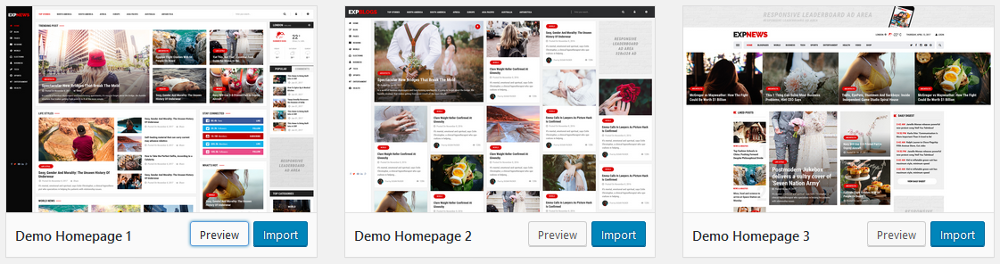
- In the Administrator page, go to Appearance > Import Demo Data to open the One Click Demo Import window.
- Now, you can see different thumnails for each demo pages. Choose the Home Page style you want, then click on Import button to start the process. Please just click only 01 time. You can also click on Preview to see the demo of this home page style.
- It will appear a popup to confirm your decision. Click on Yes, Import! to continue.
- The process many take 5-10 minutes due to the data size and your Internet. Please wait until it's done.
- After seeing the successful message, the importation is all done. Now you can have a check at your site.
- Finally, you can Deactivate plugin One Click Demo Import in your site because it is not neccessary anymore.
Important!
After the importation, there may be [ERROR] Failed to import "sw_demo.zip" (Media)
Don't worry about this. This is the one we used for our demo purpose only and this one has no effect on the theme importation process.
Warning The data will be downloaded from our server, these images are copyrighted and are for demo use only. Please click import only once and wait, this process can take a couple of minutes.
After the Data Importation, you can check your site again. Usually, you need to reconfigure the menu to have your site the same as in the demo.
- In the Administrator page, go to Appearance > Menu and choose the one you want to configure.
- After that click on Save button to save the menu.
- You can also change some information of the menu as you want. For Megamenu such as Primary Menu and Vertical Menu, you need to Active Megamenu by going to Appearance > Theme Options > Navbar Options and choose to active them.
- After all, you can check your site to see the result.
For WP Custom Menu elements, you need to go to these element with Visual Composer, rechoose the menu then save it again.
Info You can see the Menu Settings in the Basic Settings for more detail.
BASIC SETTINGS
Pages is one of the most important elements in a WordPress website. In this section, we will cover issues related to page including: Create a New Page, Set up Home Page, Page Metabox in Bosmarket theme and Page with Visual Composer.
How to create a new page?
To create a new Page, please follow steps as below:
- Log in to site in the backend.
- Select the Pages > Add New option to begin writing a new page.
- Configure Options for new page including Page Title, Page Attributes, Public Status. Page Content.
- Scrolling down to the end of the window, you will see the Page Metabox area of Bosmarket theme. Here you can configure the options including Logo, Color Schemes, Home Page template, Typography, Header, Footer and Sidebar for this page. Please note that if there is no change here, the settings in Theme Options will be applied to this page.
- After all, save the change and check the result in the front end of your site.
Info For more detail, you can see the WordPress Documentation for this problem: WordPress Pages.
How to set up Home Page?
To set up Home Page or Front Page for your website, please follow steps as below:
- Log in to your site in the backend.
- Navigate to Settings > Reading.
- In the Reading Settings, select A Static Page option.
- Select the page you want as home page in Front Page dropdown list.
- Now Save Changes and check your site again.
Info For more detail, you can see the WordPress Documentation for this problem: Creating a Static Front Page.
About Page Metabox in Bosmarket theme
After installing and activating Bosmarket theme, the Page Metabox will be availaible in your site. You can go to Pages > All Pages then choose the page you want then scrolling down to the end to see Page Metabox options.
Please note that the change in the Page Metabox will be apply to the page rather than the one in the Theme Options. If there is no change here, the settings in Theme Options will be applied to the page.
The Page Metabox often includes options: General, Typography, Header, Footer, and Sidebar.
- General: In this tab, you can configure options including Custom Logo, Home Template and Color Scheme for the page.
- Typography: In this tab, you can configure Font Style, Font Weight for elements in the page.
- Header: In this tab, you can choose to Hide Header or Header Style for the page.
- Footer: In this tab, you can choose to Hide Footer or Footer Style for the page.
- Sidebar: In this tab, you can enable Sidebar and choose type of Sidebar for the page.
Info For more detail, you can see documentation about Page Metabox: Theme Options, Page Metabox & Category Metabox.
Edit Page with Visual Composer
Bosmarket theme supports Visual Composer - the most powerful plugins that allow you to easily drag and drop page builder in the standard WordPress page/post edit area or directly from the frontend.
With Visual Composer. you can edit a page both in the backend and front end of your site. To edit a page, please follow steps as below:
- Login your site then open the page you want to edit then choose Edit with Visual Composer.
- Now, you can edit Row, Column and elements in the page. To edit elements, please hover on the one you want then click on “pencil” icon to Edit this element.
- After that, you can configure different options of this element in tab General and Design Options due to different types.
- After all, you can preview the page and Update to save the change for this page.
Info For more detail, you can see documentation about Visual Composer: Visual Composer Tutorials and Video Tutorials.
How to make your page appear in Megamenu
To have your page appear in the Megamenu, please follow steps as below:
- After creating the page, go to Appearance > Menu and choose Primary Menu (Primary Menu). This is the one set as Primary Menu in your site.
- Now, please select the page you want, then click on button Add to Menu and Save Menu.
- After all, please check your site to see the result.
Blog Post is one of the most important elements to create a Blog Page in a WordPress website. In this section, we will cover issues related to page including: Create a New Blog Post, Set up Blog page and Blog Post in Bosmarket theme.
How to create a new post?
To create a new Post please follow steps as below:
- Log in to site in the backend.
- Select the Posts > Add New option to begin writing a new post.
- Configure Options for new post including post Title, post link, Public Status, Content, Tags, Feature Image, Post Type.
- Scrolling down to the end of the window, you will see the Page Metabox area of Bosmarket theme. Here you can configure the options including Header, Footer and Sidebar for this post. Please note that if there is no change here, the settings in the page including this post will be applied.
- After all, save the change and check the result in the front end of your site.
Info For more detail, you can see the WordPress Documentation for this problem: WordPress Posts.
How to set up Blog page in Bosmarket Theme?
To set up blog page for your website, please follow steps as below:
- Log in to your site in the backend.
- Create a new page with Visual Composer and add element SW Blog Listing.
- Now, configure the options in SW Blog Listing including Title, Categories and other Design options as you want.
- Now Save Changes and check your site again.
About Page Metabox of post in Bosmarket theme
After installing and activating Bosmarket theme, the Page Metabox will be availaible in your site. You can go to Posts > All Posts then choose the post you want then scrolling down to the end to see Page Metabox options.
Please note that the change in the Page Metabox of the post will be apply to the post rather than the one in the Page Metabox of Page. If there is no change here, the settings in Page will be applied.
The post Metabox often includes options: Header, Footer, and Sidebar.
- Header: In this tab, you can choose to Hide Header or Header Style for the post.
- Footer: In this tab, you can choose to Hide Footer or Footer Style for the post.
- Sidebar: In this tab, you can enable Sidebar and choose type of Sidebar for the post.
Info For more detail, you can see documentation about Page Metabox: Theme Options, Page Metabox & Category Metabox.
Other Settings
1. Categories: To add new category, please go to Post > Categories then complete information for the new category in Add New Category window and Save it.
2. Tags: To add new tag, please go to Post > Tags then complete information for the new tag in Add New Tag window and Save it.
Post Image Size
In Bosmarket theme, we recommend to configure image dimensions for post image size. You can go to Settings > Media and set up the Image Dimentions to use when adding an image to the Media Library.
Portfolio Post is one of the most important elements to create a Portfolio Page in a WordPress website. In this section, we will cover issues related to page including: Create a New Portfolio Post, Set up Portfolio page and Portfolio Post in Bosmarket theme.
How to create a new portfolio?
To create a new Post please follow steps as below:
- Log in to site in the backend.
- Select the Portfolio > Add New option to begin writing a new portfolio.
- Configure Options for new portfolio including portfolio Title, Portfolio Link, Public Status, Content, Tags, Feature Image, Post Type.
- Scrolling down to the end of the window, you will see the Portfolio Meta area of Bosmarket theme. Here you can configure the options including Skill Needed, URL, Copyright and Image Size Mansonry Layout for this portfolio.
- After all, save the change and check the result in the front end of your site.
How to set up Portfolio page in Bosmarket Theme?
To set up portfolio page for your website, please follow steps as below:
- Log in to your site in the backend.
- Create a new page with Visual Composer and add element SW Portfolio.
- Now, configure the options in SW Portfolio including Title, Categories and other Design options as you want.
- Now Save Changes and check your site again.
Other Settings
1. Portfolio Categories: To add new category, please go to Portfolio > Categories Portfolio then complete information for the new category in Add New Category window and Save it.
2. Tags: To add new tag, please go to Portfolio > Tags then complete information for the new tag in Add New Tag window and Save it.
Product is one of the most important elements to create a Shop Page in a WordPress website. In this section, we will cover issues related to this one including: Create a New Product, Set up Product Page and other related things in Bosmarket theme.
Please make sure that you install and activate WooCommerce plugin before this process.
How to create a new product?
To create a new product, please follow steps as below:
- Log in to site in the backend.
- Select the Products > Add Product option to begin writing a new product.
- Configure Options for new product including product Title, Product Link, Public Status, Content, Tags, Feature Image, Feature Video, Categories, Brand and others.
- Scrolling down to the end of the window, you will see the Page Metabox for Product of Bosmarket theme. Here you can configure the options including Header, Footer and Sidebar for this product.
- After all, save the change and check the result in the front end of your site.
Info For more detail about this process, you can check the WooCommerce Documentation: Set Up Products.
How to set up Product page in Bosmarket Theme?
To set up product page for your website, please follow steps as below:
- Log in to your site in the backend.
- Go to Pages then create a Shop page.
- Now, go to WooCommerce > Settings > Products > Display to Assign Product Page to the new created Shop item.
- Now Save Changes and check your site again.
Info Please note that the configuration in Page Metabox has no effect on Shop page. This Shop page will only be applied the settings in Appearance > Theme Options > Products.
Other Settings
1. Categories: To add new category, please go to Product > Categories then complete information for the new category in Add New Category window and Save it.
2. Tags: To add new tag, please go to Product > Tags then complete information for the new tag in Add New Tag window and Save it.
3. Categories Brand: To add new category, please go to Product > Categories Brand then complete information for the new category in Add New Category window and Save it.
4. Attributes: To add new category, please go to Product > Attributes then complete information for the New Attribute and Save it. In Bosmarket theme, we use Color and Size.
5. Color Swatch: After adding the Attribute, you can add color swatch in tab Variations.
Product Image Size
In Bosmarket theme, to have the most beautiful shop page, we recommend to configure image dimensions for product image size as below:
- Homepage 1 - 600 x 600 pixels
- Homepage 2 – 600 x 600 pixels
- Homepage 3 – 600 x 600 pixels
Featured Video Product
In Bosmarket theme, you can use Featured Video for Product in stead of Image. To use this feature, while creating new product, you can enter the Youtube Video ID in the Featured Product Video option.
Currently, this feature only supports Youtube Video, we will update to support Vimeo video in the next version.
Color Swatch and Image for Product
In Victo theme, you can use Color Swatch and Image for Variable Products. You can use this feature for products in your site by following steps HERE.
Bosmarket supports you with various pre-made Widget Sections and available Widgets to add different elements into different pages in your site. In this section, we will give you how to use Widgets in Bosmarket theme.
These elements locates in Appearance > Widgets in the Admin Panel of your site.
Pre-made Widget Sections in Bosmarket theme
There are various pre-made widget sections in Bosmarket. They are:
- Dokan Store Sidebar: This section is for the sidebar in Dokan Store page.
- Sidebar Left Blog: This section is for the left sidebar in Blog page.
- Sidebar Right Blog: This section is for the right sidebar in Blog page.
- Header Top: This section is for the header of the page.
- Header Mid: This section is for the header of the page.
- Header Bottom: This section is for the header of the page.
- Sidebar Left Product: This section is for the left sidebar in Product Listing page.
- Sidebar Right Product: This section is for the left sidebar in Product Listing page.
- Sidebar Left Detail Product: This section is for the left sidebar in Product page.
- Sidebar Right Detail Product: This section is for the left sidebar in Product page.
- Bottom Detail Product: This section is for the bottom information in Product page.
- Filter Mobile: This section is for filter/search on mobile layout.
- Footer Copyright: This section is for the footer copyright of the page.
- Widget Search: This section is for the ajax search.
Available Widgets in Bosmarket theme
After installing Bosmarket, there are many widgets in this area. Now we will have an overview about the ones used in this theme:
- Categories: This widget is to display the blog category in widget sections
- Text: This widget is to display the text or HTML into the area you want in widget sections.
- Image: This widget is to display the image into the area you want in widget sections.
- Recent Posts: This widget is to display recent blog posts in your site.
- SW Top Widget: This widget is to display the Cart, Search, Login form or others in the Top section.
- Custom Menu: This widget is to display custom menu in widget section.
- WooCommerce Currentcy Converter: This widget is to display currency converter in widget sections.
- SW WooCommerce Related & Upsell Slider: This widget is to display Related Product in widget section of Product Page.
- WooCommerce Product Categories: This widget is to display product categories in widget section of Product Page.
- WooCommerce Price Fitler: This widget is to display price filter in widget section of Product Page.
- WooCommerce Layered Nav: This widget is to display extra attribute of product as filter in widget section of Product Page.
- SW Ajax WooCommerce Search: This widget is to display the SW Ajax WooCommerce Search in your site.
How to Add a Widget into a Widget Section
To add a Widget into a Widget Section, please follow steps as below:
- Navigate to the Appearance > Widgets tab to access the list of widgets and widget sections. The left hand side shows all the widgets you can use. The right hand side shows all the different widget sections you can add widgets to.
- Click on the widget you want, choose widget section to add and click on button Add Widget. Or else, you can drag and drop it to the widget section.
- To rearrange widgets on a widget section, just drag and drop the widgets into the order you’d like.
- After that, you need to configure different options due to different types of widget.
- Finally, click Save to save the change.
Info To remove the widget, in the section you want, please choose it then click Delete.
Widget Settings
Now we will show you the options of different widgets used in Bosmarket theme.
1. Categories:
See Screenshot: Demo - Backend
- Tittle: This option allows you to add a title to this widget.
- Display as dropdown: This option allows you to configure the item to display as dropdown.
- Show post counts: This option lets you to show post counts for categories.
- Show hierarchy: This option lets you to show category regarding to hierarchy.
- Advanced Options: This will open additional settings which are proprietary of Bosmarket. Click the button and you’ll gain access to the additional options listed below.
- Widget Style: This option allows you to style for widget among various Widget Styles. Here you can also choose the width of widget with options including Col-3, Coli-4 and others.
- Widget Display: This option lets you to display widget on All pages, in selected pages. or execpt selected pages. For the 2 later ones, you can choose to show widget only for login users or or logout users.
2. Text:
See Screenshot: Demo - Backend
- Tittle: This option allows you to add a title to this widget.
- Textbox: This option allows you to enter the content of widget.
- Advanced Options: This will open additional settings which are proprietary of Bosmarket. Click the button and you’ll gain access to the additional options listed below.
- Widget Style: This option allows you to style for widget among various Widget Styles. Here you can also choose the width of widget with options including Col-3, Coli-4 and others.
- Widget Display: This option lets you to display widget on All pages, in selected pages. or execpt selected pages. For the 2 later ones, you can choose to show widget only for login users or or logout users.
3. SW Top Widget:
See Screenshot: Demo - Backend
- Tittle: This option allows you to add a title to this widget.
- Template: This option allows you to choose template for this widget including Minicart, Login or Search.
- Advanced Options: This will open additional settings which are proprietary of Bosmarket. Click the button and you’ll gain access to the additional options listed below.
- Widget Style: This option allows you to style for widget among various Widget Styles. Here you can also choose the width of widget with options including Col-3, Coli-4 and others.
- Widget Display: This option lets you to display widget on All pages, in selected pages. or execpt selected pages. For the 2 later ones, you can choose to show widget only for login users or or logout users.
4. Custom Menu:
See Screenshot: Demo - Backend
- Tittle: This option allows you to add a title to this widget.
- Select Menu: This option allows you to choose available menu as you want.
- Advanced Options: This will open additional settings which are proprietary of Bosmarket. Click the button and you’ll gain access to the additional options listed below.
- Widget Style: This option allows you to style for widget among various Widget Styles. Here you can also choose the width of widget with options including Col-3, Coli-4 and others.
- Widget Display: This option lets you to display widget on All pages, in selected pages. or execpt selected pages. For the 2 later ones, you can choose to show widget only for login users or or logout users.
5. WooCommerce Currentcy Converter:
See Screenshot: Demo - Backend
- Tittle: This option allows you to add a title to this widget.
- Currency codes: This option allows you to add the currency code as you want. Please enter 01 currency code per line.
- Show reset link: This option allows you to show reset link for currency in the widget.
- Advanced Options: This will open additional settings which are proprietary of Bosmarket. Click the button and you’ll gain access to the additional options listed below.
- Widget Style: This option allows you to style for widget among various Widget Styles. Here you can also choose the width of widget with options including Col-3, Coli-4 and others.
- Widget Display: This option lets you to display widget on All pages, in selected pages. or execpt selected pages. For the 2 later ones, you can choose to show widget only for login users or or logout users.
- You can see documentation for this widget for more detail: Documentation for Currency Converter Widget.
6. SW WooCommerce Related & Upsell Slider:
See Screenshot: Demo - Backend
- Tittle: This option allows you to add a title to this widget.
- Description: This option allows you to add description to this widget.
- Number of posts: This option allows you to configure the number of products appearing.
- Excerpt length (in words): This option allows you to configure the charater number of product title.
- Template: This option allows you to choose template for this widget.
- Advanced Options: This will open additional settings which are proprietary of Bosmarket. Click the button and you’ll gain access to the additional options listed below.
- Widget Style: This option allows you to style for widget among various Widget Styles. Here you can also choose the width of widget with options including Col-3, Coli-4 and others.
- Widget Display: This option lets you to display widget on All pages, in selected pages. or execpt selected pages. For the 2 later ones, you can choose to show widget only for login users or or logout users.
7. WooCommerce Product Categories:
See Screenshot: Demo - Backend
- Tittle: This option allows you to add a title to this widget.
- Order by: This option allows you to configure the order of product categories according to Name or Category Order.
- Display as dropdown: This option allows you to configure the item to display as dropdown.
- Show post counts: This option lets you to show post counts for categories.
- Show hierarchy: This option lets you to show category regarding to hierarchy.
- Only show children of the current category: This option allows you to show children of the current category.
- Hide empty categories: This option allows you to hide empty categories.
- Advanced Options: This will open additional settings which are proprietary of Bosmarket. Click the button and you’ll gain access to the additional options listed below.
- Widget Style: This option allows you to style for widget among various Widget Styles. Here you can also choose the width of widget with options including Col-3, Coli-4 and others.
- Widget Display: This option lets you to display widget on All pages, in selected pages. or execpt selected pages. For the 2 later ones, you can choose to show widget only for login users or or logout users.
8. WooCommerce Price Fitler:
See Screenshot: Demo - Backend
- Tittle: This option allows you to add a title to this widget.
- Advanced Options: This will open additional settings which are proprietary of Bosmarket. Click the button and you’ll gain access to the additional options listed below.
- Widget Style: This option allows you to style for widget among various Widget Styles. Here you can also choose the width of widget with options including Col-3, Coli-4 and others.
- Widget Display: This option lets you to display widget on All pages, in selected pages. or execpt selected pages. For the 2 later ones, you can choose to show widget only for login users or or logout users.
9. WooCommerce Layered Nav:
See Screenshot: Demo - Backend
Please note that you need to create attribute for product in Products > Attributes first.- Tittle: This option allows you to add a title to this widget.
- Attribute: This option allows you to choose create attribute to display.
- Display type: This option allows you to choose display type to this widget.
- Query type: This option allows you to choose query type to this widget.
- Advanced Options: This will open additional settings which are proprietary of Bosmarket. Click the button and you’ll gain access to the additional options listed below.
- Widget Style: This option allows you to style for widget among various Widget Styles. Here you can also choose the width of widget with options including Col-3, Coli-4 and others.
- Widget Display: This option lets you to display widget on All pages, in selected pages. or execpt selected pages. For the 2 later ones, you can choose to show widget only for login users or or logout users.
10. SW Ajax WooCommerce Search:
See Screenshot: Demo - Backend
- You can see documentation for this widget for more detail: Documentation for SW Ajax WooCommerce Search.
11. Image:
See Screenshot: Demo - Backend
- Tittle: This option allows you to add a title to this widget.
- Upload Image: This option allows you to upload image you want for this widget.
- Advanced Options: This will open additional settings which are proprietary of Bosmarket. Click the button and you’ll gain access to the additional options listed below.
- Widget Style: This option allows you to style for widget among various Widget Styles. Here you can also choose the width of widget with options including Col-3, Coli-4 and others.
- Widget Display: This option lets you to display widget on All pages, in selected pages. or execpt selected pages. For the 2 later ones, you can choose to show widget only for login users or or logout users.
12. Recent Posts:
See Screenshot: Demo - Backend
- Tittle: This option allows you to add a title to this widget.
- Number of posts to show: This option allows you to set the number of posts to show.
- Display post date?: Choose to display post date or not.
- Advanced Options: This will open additional settings which are proprietary of Bosmarket. Click the button and you’ll gain access to the additional options listed below.
- Widget Style: This option allows you to style for widget among various Widget Styles. Here you can also choose the width of widget with options including Col-3, Coli-4 and others.
- Widget Display: This option lets you to display widget on All pages, in selected pages. or execpt selected pages. For the 2 later ones, you can choose to show widget only for login users or or logout users.
Bosmarket theme supports you with various Header and Footer Style and this feature will be updated in the future. In this section, we will discuss about the configuration and settings of Bosmarket Header and Footer.
Bosmarket Header
There are various Header Styles in this theme. They are:
Info To choose Header style you want, you can go to Appearance > Theme Options > Header & Footer and choose it. After that, you need to create or configure the elements for the Header Style in Appearance > Widgets.
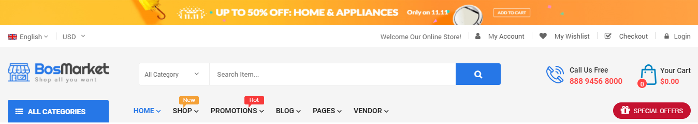
Header Style 1 includes elements:
Header Top: See screenshot: Backend Settings.
Header Top 2: See screenshot: Backend Settings.
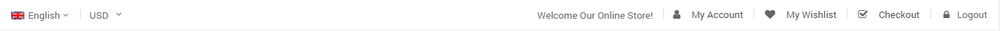
Text 1 for Language Switcher:
<div id="lang_sel">
<ul class="nav">
<li><a class="lang_sel_sel icl-en" href="#"><img class="iclflag" title="English" src="[bloginfo]/wp-content/themes/bosmarket/assets/img/en.png" alt="en" width="18" height="12" />English</a>
<ul>
<li class="icl-en"><a href="[get_url]&direction=ltr"><img class="iclflag" title="English" src="[bloginfo]/wp-content/themes/bosmarket/assets/img/en.png" alt="en" width="18" height="12" />English</a></li>
<li class="icl-ar"><a href="[get_url]&direction=rtl"><img class="iclflag" title="Arabic" src="[bloginfo]/wp-content/themes/bosmarket/assets/img/ar.png" alt="ar" width="18" height="12" />Arabic</a></li>
</ul>
</li>
</ul>
</div>
Text 2:
<div class="header-mes">welcome our online store!</div>
Header Mid: See screenshot: Backend Settings.
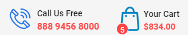
Text:
<div class="header-call"> <h3>Call us free</h3> 888 9456 8000 </div>
Header Bottom: See screenshot: Backend Settings.
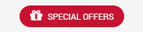
Text:
<a class="header-gift" href="#">Special offers</a>
Widget Search: This is for Ajax Search feature. See screenshot: Backend Settings.
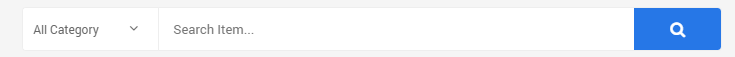
Header Style 2 includes elements:
Header Top 3: See screenshot: Backend Settings.

Text 1 for Language Switcher:
<div id="lang_sel">
<ul class="nav">
<li><a class="lang_sel_sel icl-en" href="#"><img class="iclflag" title="English" src="[bloginfo]/wp-content/themes/bosmarket/assets/img/en.png" alt="en" width="18" height="12" />English</a>
<ul>
<li class="icl-en"><a href="[get_url]&direction=ltr"><img class="iclflag" title="English" src="[bloginfo]/wp-content/themes/bosmarket/assets/img/en.png" alt="en" width="18" height="12" />English</a></li>
<li class="icl-ar"><a href="[get_url]&direction=rtl"><img class="iclflag" title="Arabic" src="[bloginfo]/wp-content/themes/bosmarket/assets/img/ar.png" alt="ar" width="18" height="12" />Arabic</a></li>
</ul>
</li>
</ul>
</div>
Text 2:
<ul class="header-mes2"> <li>welcome our online store!</li> <li class="email">Email:<a href="mailto:contact@wpthemego.com">contact@wpthemego.com</a></li> <li class="phone">Hotline:(888) 4344 6000 - (888) 1338 9183</li> </ul>
Header Mid 2: See screenshot: Backend Settings.
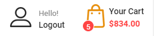
Header Bottom 2: See screenshot: Backend Settings.
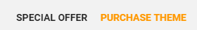
Widget Search: This is for Ajax Search feature. See screenshot: Backend Settings.
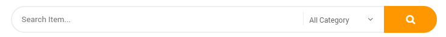
Header Style 3 includes elements:
Top Header 4: See screenshot: Backend Settings.
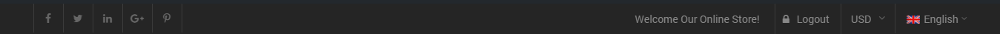
Text 1 for Language Switcher:
<div id="lang_sel">
<ul class="nav">
<li><a class="lang_sel_sel icl-en" href="#"><img class="iclflag" title="English" src="[bloginfo]/wp-content/themes/bosmarket/assets/img/en.png" alt="en" width="18" height="12" />English</a>
<ul>
<li class="icl-en"><a href="[get_url]&direction=ltr"><img class="iclflag" title="English" src="[bloginfo]/wp-content/themes/bosmarket/assets/img/en.png" alt="en" width="18" height="12" />English</a></li>
<li class="icl-ar"><a href="[get_url]&direction=rtl"><img class="iclflag" title="Arabic" src="[bloginfo]/wp-content/themes/bosmarket/assets/img/ar.png" alt="ar" width="18" height="12" />Arabic</a></li>
</ul>
</li>
</ul>
</div>
Text 2:
<div class="header-mes">welcome our online store!</div>
Header Mid: See screenshot: Backend Settings.
Text:
<div class="header-call"> <h3>Call us free</h3> 888 9456 8000 </div>
Header Bottom: See screenshot: Backend Settings.
Text:
<a class="header-gift" href="#">Special offers</a>
Widget Search: This is for Ajax Search feature. See screenshot: Backend Settings.
Header Style 4 includes elements:
Top Header 5: See screenshot: Backend Settings.
Text 1:
<ul class="top-left"> <li class="item1">finalcial services</li> <li class="item2">wrewards</li> <li class="item3">stores</li> <li class="item4">customer support</li> </ul>
Text 2:
<ul class="top-right"> <li class="item1">safe & secure</li> <li class="item2">easy returns</li> </ul>
Header Mid3: See screenshot: Backend Settings.
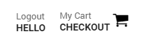
Header Bottom3: See screenshot: Backend Settings.
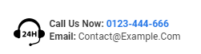
Text:
<div class="contact-header"><span class="text">call us now:</span> <span class="phone">0123-444-666</span><br> Email:<a href="mailto:contact@wpthemego.com"> contact@example.com</a></div>
Widget Search: This is for Ajax Search feature. See screenshot: Backend Settings.
Bosmarket Footer
Bosmarket also supports various Footer Styles. They are:
Info To choose Footer style you want, you can go to Appearance > Theme Options > Header & Footer and choose it. You also need to create or configure the footer elements in Pages > All Pages > Footer Style x for the Footer Style you choose.
MailChimp for WordPress helps you add more subscribers to your MailChimp lists using various methods. You can create good looking opt-in forms or integrate with any other form on your site, like your comment, contact or checkout form.
After installing Bosmarket and activating all plugin, MailChimp is available in your site. In this section, we will show you how to configure this plugin in Bosmarket theme.
Info To have the popup with MailChimp form, you can go to Appearance > Theme Options > Popup Config to activate it and do some settings there.
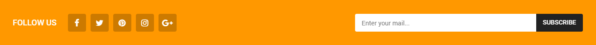
Connect with your MailChimp account
Firstly, you need to connect MailChimp in your site with your MailChimp account. Please follow steps as below:
- Log in to site in the backend.
- Go to MailChimp for WP > MailChimp at the left sidebar menu.
- Now, in the General Settings window, you need to configure the MailChimp API Settings by adding your API Key to connect to your MailChimp account.
- After all, click Save Change button to Connect with your account.
Configure MailChimp for your WordPress site
To have the MailChimp works effectively and have style as in the demo, you need to do some configurations as below:
- Log in to site in the backend and go to MailChimp for WP > MailChimp > Forms.
- Complete the Form Field in tab Field. See screenshot: Backend Settings
- Complete the Form Messages in tab Messages. See screenshot: Backend Settings
- Complete the Form Settings in tab Settings. See screenshot: Backend Settings
- Complete the Form Appearance in tab Appearance. See screenshot: Backend Settings
- After all, save the change and check the result in the front end of your site.
The text in Form Field:
<p>
<input type="email" name="EMAIL" placeholder="Enter your mail..." required />
<input type="submit" value="subscribe" />
</p>
Info For more detail, you can see the Documentation for this problem: How to Use MailChimp for your WordPress themes?.
THEME OPTIONS
Our stunning Bosmarket theme provides an advanced Theme Options panel that is loaded with many options to customize your page effectively. These options are organized into logical tabbed sections which will be very easy for you to navigate. After installing Bosmarket successfully, the Theme Options will be available in your site.
To access Bosmarket Theme Options, please go to Appearance > Theme Options. There you can see logical tabs including:
| General | Here you can do general configuration such as Logo Image, Favicon, Breadcrumb Background, Taxonomy and Title Length Of Item Listing Page. |
| Schemes | Here you can set color scheme for your site. |
| Layout | Here you can configure layout options including box layout, sidebar on different device. |
| Mobile Layout | Here you can configure layout of your site on mobile. |
| Header & Footer | Here you can configure header and footer style for your site. |
| Navbar Options | Here you can configure the Megamenu and sticky menu for your site. |
| Blog Options | Here you can configure the options for your blog page. |
| Product Options | Here you can configure the options for your product page. |
| Typography | Here you can configure the options about typography for your site. |
| Social | Here you can configure the link for social share in your site. |
| Maintaincece Mode | Here you can set the maintainece mode for your website. |
| Popup Config | Here you can activate and configure the popup for your site. |
| Advanced | Here you can configure the advanced options including layout RTL, adding shortcode or custom CSS/JS. |
| Import/Export | Here you can import or export theme option settings. |
| Advanced Plugins | Here you can turn on/off the plugin Our Team, Testiminial or Portfolio. |
Important!
- Customize & Cpanel option: This is only used for the Demo development. Due to the risk of loosing your customization in CSS file, the option Demo Mode is not recommended.
- Reset to Defaults option: Please DO NOT use it if you do not want to loose your configuration. When the theme is reset to default, all the value here will be back to the default without saving any your configuration.
- The configuration here will be applied to the pages in your site if there is no change in the Page Metabox. As demo data, we have configured Logo, Color, Header and Footer Style for each Home page. You can go to the page and configure these settings in the Page Metabox. If you don't want to have the Home Page different from other page, you can choose No Select for the option here, the settings in the Theme Options wil be applied.
- About the Developer Mode, when you enable this function, the WordPress Less Plugin is required to install. After using this feature, this mode should be turned off then it wont prevent the speed of your site. Due to the risk of loosing customization in CSS file, this option is NOT recommended.
Info For more detail, you can see How to Use Theme Options, Page Metabox and Category Metabox for more detail.
The theme allows to build your own styles right out of the backend without any coding knowledge.
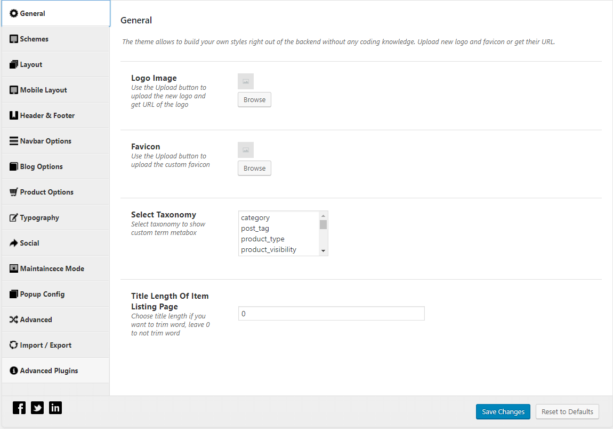
- Logo Image: Use the Upload button to upload the new logo and get URL of the logo.
- Breadcrumb Background: Use upload button to upload custom background for breadcrumb.
- Favicon: Use the Upload button to upload the new favicon and get URL of the favicon.
- Select Taxonomy: Select taxonomy to show custom term metabox.
- Title Length Of Item Listing Page: Choose title length if you want to trim word, leave 0 to not trim word.
The theme allows to custom color scheme for theme with unlimited colors.
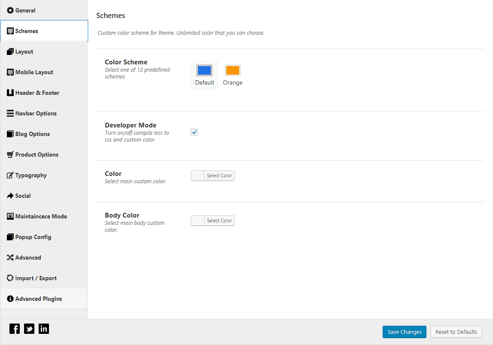
- Color Scheme: Select one of 2 predefined schemes to set the color for your site.
- Developer Mode: Turn on/off compile less to css and custom color. You need to choose this option to activate option Color below. However, this mode is not recommended because of the risk of loosing Custom CSS files.
- Color: You can choose main color for your site after activate the Develop Mode above.
Info: About the Developer Mode, when you enable this function, the WordPress Less Plugin is required to install. After using this feature, this mode should be turned off then it wont prevent the speed of your site.
Bosmarket gives you multiple selections to configure the layout of you website including layout type and sidebar expand on different devices.
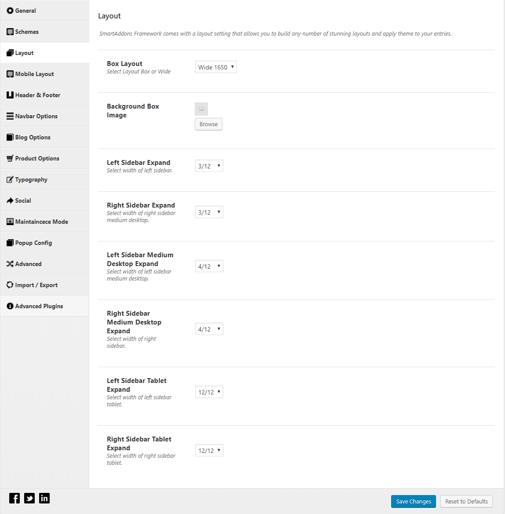
- Box Layout: Select Layout Default, Boxed or Wide 1650 for your site. For layout Default/Boxed, the content pages will have width at 1170px. For layout Wide 1650, the content pages will have width at 1650px.
- Background Box Image: Upload Image to set as background image for your box layout.
- Left Sidebar Expand: Select width of left sidebar for sidebar in Blog page and Shop Page.
- Right Sidebar Expand: Select width of right sidebar for sidebar in Blog page and Shop Page.
TopDeal supports you with a mobile setting home page layout.
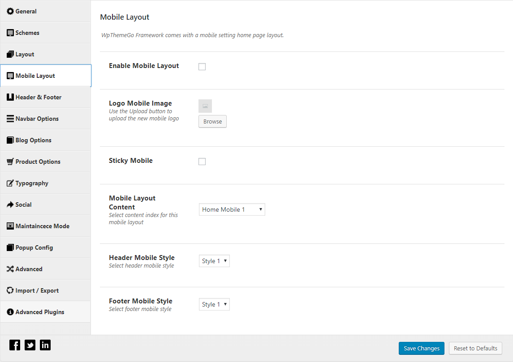
- Enable Mobile Layout: Choose this one to activate the mobile layout in your site with the options listing below. If this one is not enabled, the responsive mode will be applied automatically & the options listing below will have no effect in your site.
- Logo Mobile Image: Upload Image to set as logo for your mobile layout.
- Sticky Mobile: Choose this one to activate the sticky mobile.
- Mobile Layout Content: Select content index for this mobile layout.
- Header Mobile Style: Select header mobile style.
- Footer Mobile Style: Select footer mobile style.
Info You can see Mobile Layout for more detail about this problem.
The theme allows to configure the Header and Footer of your site.
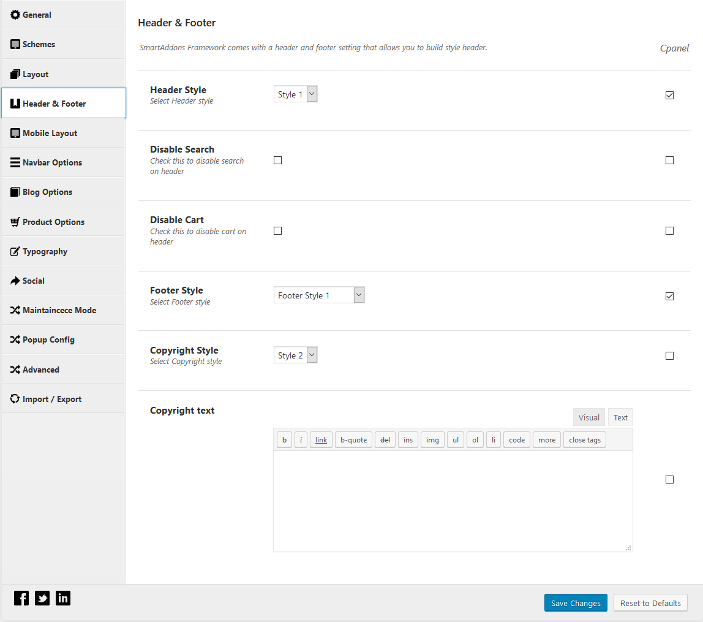
- Header Style: Select the header style for your site.
- Enable Background Header Mid: Choose this one to enable background header mid your site.
- Background header mid: After enabling the background header mid option, you can upload the image here.
- Disable Search: Choose this one to disable Search on the header.
- Disable Cart: Choose this one to disable Cart on the header.
- Footer Style: Select the footer style for your site.
- Copyright text: Insert the Copyright text for your site.
Info Currently this theme support 03 header styles and 01 footer styles. You can see Basic Settings for more detail about the header configuration.
If you got a big site with a lot of sub menus we recommend using a mega menu. Just select the dropbox to display a menu as mega menu or dropdown menu.

- Menu Type: Select to set the menu in your site as Megamenu or Dropdown Menu.
- Theme Location: Select theme location to active mega menu and menu responsive.
- Active sticky menu: Choose this option if you want to activate the sticky menu.
- Menu Event: Set your menu event as Hover or Click event.
- Number Item Vertical: Set the number of menu item on your vertical megamenu.
- Vertical More Text: Change More text on your vertical menu.
- Vertical Less Text: Change Less text on your vertical menu.
In this tab, you can configure the layout for your blog listing page.

- Sidebar Blog Layout:Select style sidebar blog. You can choose Full layout, Left Sidebar or Right Sidebar.
- Layout blog: Select style layout blog including List Layout or Grid Layout.
- Blog column: Select style number column for blog page. You can choose to set it as 2 columns, 2 columns or 4 columns.
In this tab, you can configure the layout for your product listing page.
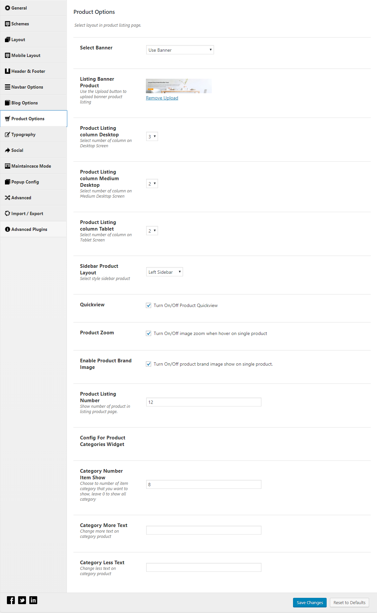
- Select Banner: Select the Banner of your product page as Category Product Image or Banner. If you choose to Use Banner, your custom image will be applied the same for all product pages. If you choose to Use Category Product Image, the category images of the product will be applied as banner in your site.
- Listing Banner Product: If you choose Banner as Use Banner, you can upload image here.
- Product Listing Column: Select number of column on different device such as desktop, medium destop and tablet.
- Sidebar Product Layout:Select style sidebar product. You can choose Full layout, Left Sidebar or Right Sidebar.
- Quickview: You can choose this one to activate the product quickview mode.
- Product Zoom: You can choose this one to activate the product image zoom when hover on single product.
- Product Listing Number: Show number of product in listing product page.
- Config For Product Categories Widget: In this section, you can set the number of category item shown. category more text and category less text for Product Categories Widget.
The theme allows to change the font style in your site with Google Font.
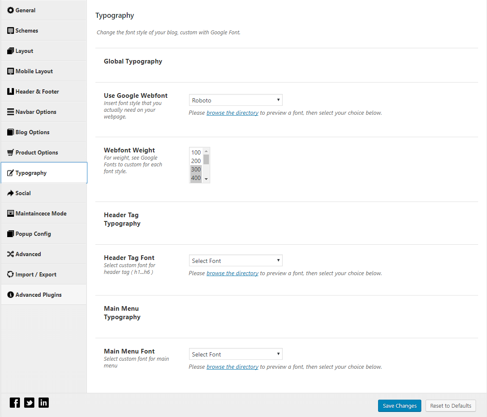
- Use Google Webfont: Insert font style that you actually need on your webpage.
- Webfont Weight: For weight, see Google Fonts to custom for each font style. You can choose from 100 to 900.
- Header Tag Font: Select custom font for Header tag (H1 to H6).
- Main Menu Font: Select custom font for your Main Menu.
If your site has not been ready to be launch, the Maintaincece Mode will be truly useful for you.
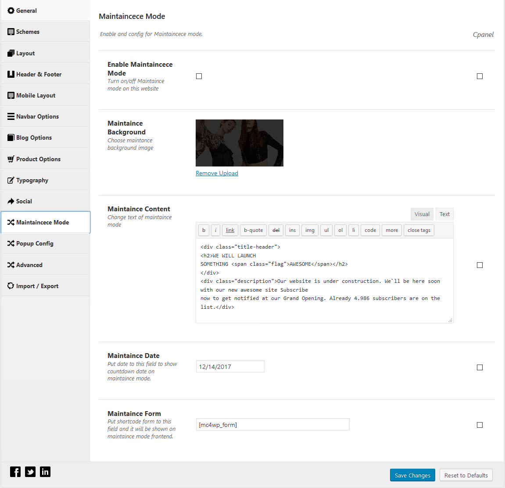
- Enable Maintaincece Mode: Choose this one to turn on the Maintaincece Mode for your website. After that, all the options listing below will be applied.
- Maintaince Background: This allows you to upload the background image for Maintaincece Mode.
- Maintaince Content: This allows you to custom the Maintaince Content.
- Maintaince Date: This allows you to set date to show countdown date on maintaince mode.
- Maintaince Form: This allows you to insert shortcode form to show on maintaince mode frontend.
Bosmarket theme allows you to use popup in your website and you can custom its style with various options in this tab.
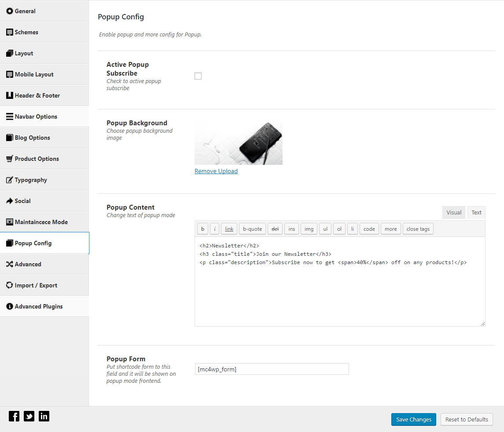
- Active Popup Subscribe: You can upload the background image for your popup.
- Popup Content: This allows you to add content for your popup.
- Popup Form: This allows you to insert shortcode form to show it on frontend. In Bosmarket, the MailChimp for WordPress form is used.
This tab provide some advanced options for your site.
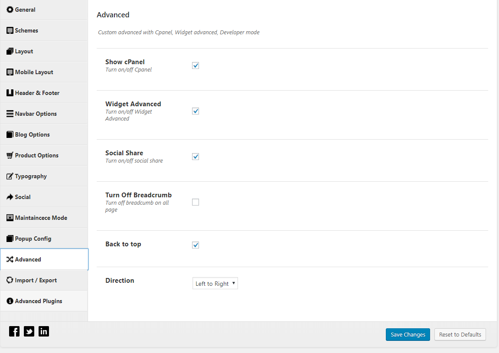
- Show cPanel: Turn on/off cPanel options. This is only used for theme develop purpose only and you don't need to mind about this.
- Widget Advanced: Turn on/off Widget Advanced.
- Social Share: You can enable this one to turn on the social share on your website esspecially on Blog page.
- Turn Off Breadcrumb: This option allows you to turn off the Breadcrumb on all pages in your site.
- Back to top: Choose this one if you want to enable the button Back to top in your site.
- Direction:Set your site layout as Left to Right or Right to Left.
- Custom CSS/JS: Insert your own CSS into this block. This overrides all default styles located throughout the theme
- Custom CSS/JS: Insert your own JS into this block. This customizes js throughout the theme
Before configuring, you can also backup your theme options by clicking on the Import/Export tab. This is a great way to move your custom options from site to site.
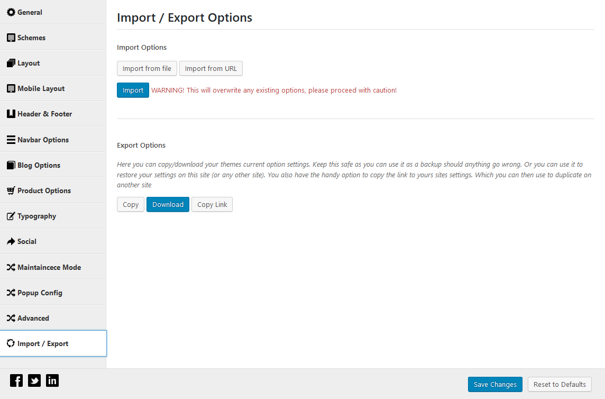
- Import Options: You can import options from file or URL. WARNING! This will overwrite any existing options, please proceed with caution!.
- Export Options: Here you can copy/download your themes current option settings. Keep this safe as you can use it as a backup should anything go wrong. Or you can use it to restore your settings on this site (or any other site). You also have the handy option to copy the link to yours sites settings. Which you can then use to duplicate on another sit.
If you don't want to use any of advanced plugins, you can turn it off in this tab.
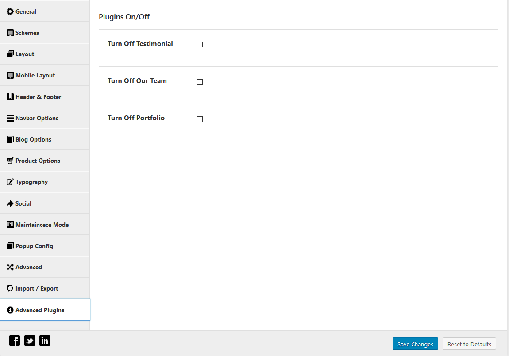
- Turn Off Our Team/Testimonial/Portfolio: Click to turn off the plugin if you don't want to use in your site.
THEME ELEMENTS
Bosmarket comes with various theme elements that let you to customize page in your site easily with Visual Composer. After installing the theme or quickstart, all the extensions/plugins will be available in your site and you can add to your pages using Visual Composer. In this part, we will show you how to use Bosmarket Theme elements.
How to add Bosmarket elements into your page?
- Login your site then open the page you want to edit then choose Edit with Visual Composer.
- To add elements, please click on Add element icon of Visual Composer, then choose the element you want.
- To edit elements, please hover on the one you want then click on “pencil” icon to Edit this element.
- After that, you can configure different options of this element in tab General and Design Options due to different types.
- After all, you can preview the page and Update to save the change for this page.
Info For more detail, you can see documentation about Visual Composer: Visual Composer Tutorials and Video Tutorials.
This element helps you to display products of a category as slider in the page. After installing the theme and required plugins, this SW WooCommerce Tab Slider element will be available in your site.
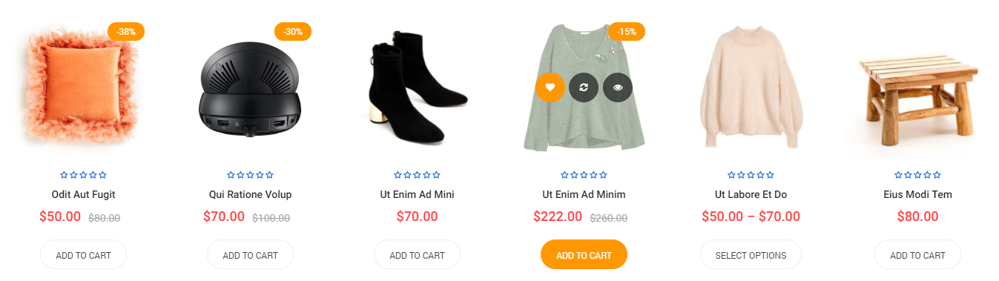
How to add SW WooCommerce Slider element into your page?
To add this element to your page, please follow steps as below:
- Open your page and choose Edit with Visual Composer.
- Click on Add element icon of Visual Composer, then choose SW WooCommerce Slider.
- Hover on this element and click on Pecil icon to edit it.
- After that, configure element options then Save change for this element.
- Preview the page and Update to save the change for this page.
SW WooCommerce Slider Settings
With this element, there are various options for you to configure as your expectation.
See screenshot: Backend Settings
- Title: Enter text used as widget title located above content element.
- Product Title Length: Choose Product Title Length if you want to trim word, leave 0 to not trim word.
- Category: Choose category including product you want to show. You can choose only 01 category for this element.
- Icon Slide: Select icon from media library to set icon slide before the category title.
- Banner Images: Select image from media library to set banner for element.
- Select Style: Choose display style for element as Default or other ones.
- Description: Enter the description of the elements. It will appear below the title.
- Category: Choose categories including product you want to show. Each category is a tab in the slider.
- Select Order Product: Set the order for products as Featured Products, Top Rating Products, Best Selling Products or Latest Products.
- Order By: Set the order of product by Name, Date, Author, ID, Modified or others.
- Order: Set product order by Ascending or Descending.
- Number Of Post: Set number of product posts to appear in your site.
- Number row per column: Set number of product posts to appear per row/colum in your site.
- Number of Columns ... : Set number of column appearing on each screen size.
- Speed: Set speed for slider.
- Auto Play: Choose True to have slider plays automatically and choose False for not automatically play.
- Interval: Set the interval time for slider auto plays.
- Layout: Choose display layout for the element.
- Total Items Slided: Choose total item slided.
Product Settings for this elements:
To have the style and information as in the demo, you need to do some configuration for product and category.
- Category Settings: Product category should be created first, after that you can assign in the element. See screenshot: Backend Settings
- Product Settings: You should pay attention to options including Product Title, Product Category, Product Image, and Sale Price. See screenshot: Backend Settings
This element helps you to display products of categories as slider in the page. After installing the theme and required plugins, this SW WooCommerce Tab Slider element will be available in your site.
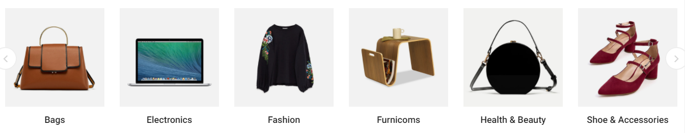
How to add SW WooCommerce Categories Slider element into your page?
To add this element to your page, please follow steps as below:
- Open your page and choose Edit with Visual Composer.
- Click on Add element icon of Visual Composer, then choose SW WooCommerce Categories Slider.
- Hover on this element and click on Pecil icon to edit it.
- After that, configure element options then Save change for this element.
- Preview the page and Update to save the change for this page.
SW WooCommerce Categories Slider Settings
With this element, there are various options for you to configure as your expectation.
See screenshot: Backend Settings
- Title: Enter text used as widget title located above content element.
- Product Title Length: Choose Product Title Length if you want to trim word, leave 0 to not trim word.
- Description: Enter the description of the elements. It will appear below the title.
- Icon Title: Choose font Icon you want in FontAwesome.
- Categories: Choose categories including product you want to show.
- Number row per column: Set number of product posts to appear per row/colum in your site.
- Number Of Products: Set number of product posts to appear in your site.
- Order By: Set the order of product by Name, Date, Author, ID, Modified or others.
- Number of Columns ... : Set number of column appearing on each screen size.
- Speed: Set speed for slider.
- Auto Play: Choose True to have slider plays automatically and choose False for not automatically play.
- Interval: Set the interval time for slider auto plays.
- Layout: Choose display layout for the element.
- Total Items Slided: Choose total item slided.
Product Settings for this elements:
To have the style and information as in the demo, you need to do some configuration for product and category.
- Category Settings: Product category should be created first, after that you can assign in the element. See screenshot: Backend Settings
- Product Settings: You should pay attention to options including Product Title, Product Category, Product Image, and Sale Price. See screenshot: Backend Settings
This element helps you to display coundown for products as slider in the page. After installing the theme and required plugins, this SW WooCommerce Tab Slider element will be available in your site.
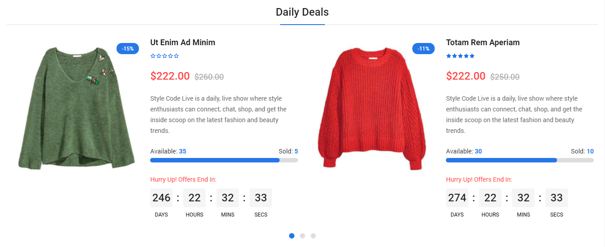
How to add SW WooCommerce Countdown Slider element into your page?
To add this element to your page, please follow steps as below:
- Open your page and choose Edit with Visual Composer.
- Click on Add element icon of Visual Composer, then choose SW WooCommerce Countdown Slider.
- Hover on this element and click on Pecil icon to edit it.
- After that, configure element options then Save change for this element.
- Preview the page and Update to save the change for this page.
SW WooCommerce Countdown Slider Settings
With this element, there are various options for you to configure as your expectation.
See screenshot: Backend Settings
- Title: Enter text used as widget title located above content element.
- Product Title Length: Choose Product Title Length if you want to trim word, leave 0 to not trim word.
- Icon Title: Choose font Icon you want in FontAwesome.
- Category: Choose category including product you want to show. You can choose only 01 category for this element.
- Image Slide: Upload the image then it will appear in the element in some layout style.
- Order By: Set the order of product by Name, Date, Author, ID, Modified or others.
- Order: Set the order as Ascending or Descending.
- Number Of Post: Set number of product posts to appear in your site.
- Number row per column: Set number of product posts to appear per row/colum in your site.
- Number of Columns ... : Set number of column appearing on each screen size.
- Speed: Set speed for slider.
- Auto Play: Choose True to have slider plays automatically and choose False for not automatically play.
- Interval: Set the interval time for slider auto plays.
- Layout: Choose display layout for the element.
- Total Items Slided: Choose total item slided.
Product Settings for this elements:
To have the style and information as in the demo, you need to do some configuration for product and category.
- Category Settings: Product category should be created first, after that you can assign in the element. See screenshot: Backend Settings
- Product Settings: You should pay attention to options including Product Title, Product Category, Product Image, Schedue and Sale Price. See screenshot: Backend Settings
This element helps you to display products of a category for tabs as different product order type in the page. After installing the theme and required plugins, this SW WooCommerce Tab Slider element will be available in your site.
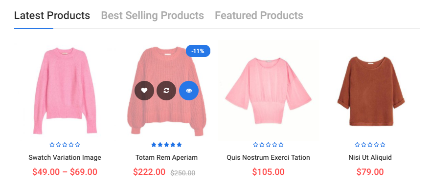
How to add SW WooCommerce Tab Slider element into your page?
To add this element to your page, please follow steps as below:
- Open your page and choose Edit with Visual Composer.
- Click on Add element icon of Visual Composer, then choose SW WooCommerce Tab Slider.
- Hover on this element and click on Pecil icon to edit it.
- After that, configure element options then Save change for this element.
- Preview the page and Update to save the change for this page.
SW WooCommerce Tab Slider Settings
With this element, there are various options for you to configure as your expectation.
See screenshot: Backend Settings
- Title: Enter text used as widget title located above content element.
- Product Title Length: Choose Product Title Length if you want to trim word, leave 0 to not trim word.
- Category: Choose category including product you want to show. You can choose only 01 category for this element.
- Icon Slide: Select icon from media library to set icon slide before the category title.
- Banner Images: Select image from media library to set banner for element.
- Select Style: Choose display style for element as Default or other ones.
- Select Order Product: Set the order for products as Featured Products, Top Rating Products, Best Selling Products or Latest Products. Each of them is display as a tab in the element.
- Number row per column: Set number of product posts to appear per row/colum in your site.
- Tab Active: Set number of active tab for this element.
- Number of Columns ... : Set number of column appearing on each screen size.
- Speed: Set speed for slider.
- Auto Play: Choose True to have slider plays automatically and choose False for not automatically play.
- Interval: Set the interval time for slider auto plays.
- Total Items Slided: Choose total item slided. Currently, layout Default is supported.
- Layout: Choose display layout for the element.
Product Settings for this elements:
To have the style and information as in the demo, you need to do some configuration for product and category.
- Category Settings: Product category should be created first, after that you can assign in the element. See screenshot: Backend Settings
- Product Settings: You should pay attention to options including Product Title, Product Category, Product Image, Product Location and Sale Price. See screenshot: Backend Settings
This element helps you to display products according to each category tab as highlight point in your site. After installing the theme and required plugins, this SW WooCommerce Tab Category Slider element will be available in your site.
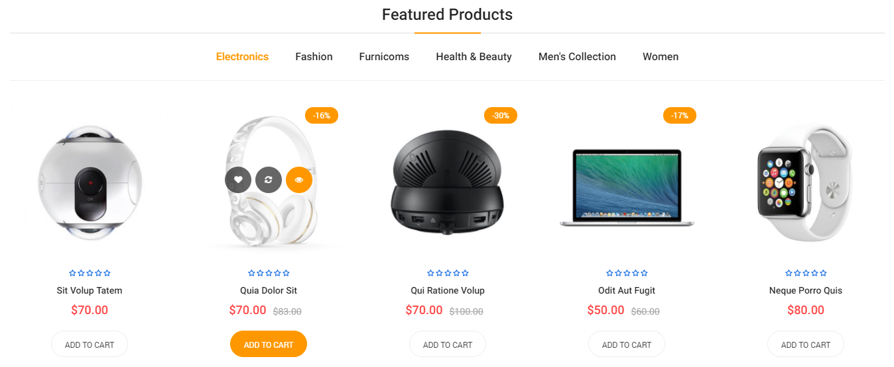
How to add SW WooCommerce Tab Category Slider element into your page?
To add this element to your page, please follow steps as below:
- Open your page and choose Edit with Visual Composer.
- Click on Add element icon of Visual Composer, then choose SW WooCommerce Tab Category Slider.
- Hover on this element and click on Pecil icon to edit it.
- After that, configure element options then Save change for this element.
- Preview the page and Update to save the change for this page.
SW WooCommerce Tab Category Slider Settings
With this element, there are various options for you to configure as your expectation.
See screenshot: Backend Settings
- Title: Enter text used as widget title located above content element.
- Product Title Length: Choose Product Title Length if you want to trim word, leave 0 to not trim word.
- Description: Enter the description of the elements. It will appear below the title.
- Category: Choose categories including product you want to show. Each category is a tab in the slider.
- Select Order Product: Set the order for products as Featured Products, Top Rating Products, Best Selling Products or Latest Products.
- Order By: Set the order of product by Name, Date, Author, ID, Modified or others.
- Order: Set product order by Ascending or Descending.
- Number Of Post: Set number of product posts to appear in your site.
- Number row per column: Set number of product posts to appear per row/colum in your site.
- Tab Active: Set number of active tab for this element.
- Number of Columns ... : Set number of column appearing on each screen size.
- Speed: Set speed for slider.
- Auto Play: Choose True to have slider plays automatically and choose False for not automatically play.
- Interval: Set the interval time for slider auto plays.
- Layout: Choose display layout for the element.
- Total Items Slided:: Choose total item slided.
Product Settings for this elements:
To have the style and information as in the demo, you need to do some configuration for product and category.
- Category Settings: Product category should be created first, after that you can assign in the element. See screenshot: Backend Settings
- Product Settings: You should pay attention to options including Product Title, Product Category, Product Image, Product Location and Sale Price. See screenshot: Backend Settings
This element helps you to display latest product as slider in the page. After installing the theme and required plugins, this SW Latest Product element will be available in your site.
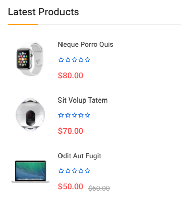
How to add SW Latest Product element into your page?
To add this element to your page, please follow steps as below:
- Open your page and choose Edit with Visual Composer.
- Click on Add element icon of Visual Composer, then choose SW Latest Product.
- Hover on this element and click on Pecil icon to edit it.
- After that, configure element options then Save change for this element.
- Preview the page and Update to save the change for this page.
SW Latest Product Settings
With this element, there are various options for you to configure as your expectation.
See screenshot: Backend Settings
- Title: Enter text used as widget title located above content element.
- Product Title Length: Set product title length as you want.
- Template: Choose style for this element.
- Category: Choose Category you want to display.
- Style: Choose style for this element.
- Number of products to slide: Set number of products to slide.
- Number of posts to show: Set number of products to show.
- Extra class name: If you wish to style particular content element differently, then use this field to add a class name and then refer to it in your css file.
Product Settings for this elements:
To have the style and information as in the demo, you need to do some configuration for products.
- Product Settings: You should pay attention to options including Product Title, Product Image, Product Location and Price. See screenshot: Backend Settings
Info For more detail, you can see the Product Settings in Product part in Basic Settings for more detail.
This element helps you to display on sale product as slider in the page. After installing the theme and required plugins, this SW On Sale Product element will be available in your site.
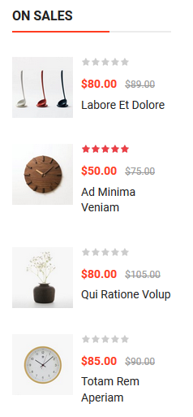
How to add SW On Sale Product element into your page?
To add this element to your page, please follow steps as below:
- Open your page and choose Edit with Visual Composer.
- Click on Add element icon of Visual Composer, then choose SW On Sale Product.
- Hover on this element and click on Pecil icon to edit it.
- After that, configure element options then Save change for this element.
- Preview the page and Update to save the change for this page.
SW On Sale Product Settings
With this element, there are various options for you to configure as your expectation.
See screenshot: Backend Settings
- Title: Enter text used as widget title located above content element.
- Product Title Length: Set product title length as you want.
- Category: Choose Category you want to display.
- Extra class name: If you wish to style particular content element differently, then use this field to add a class name and then refer to it in your css file.
Product Settings for this elements:
To have the style and information as in the demo, you need to do some configuration for products.
- Product Settings: You should pay attention to options including Product Title, Product Image, Product Location and Price. See screenshot: Backend Settings
Info For more detail, you can see the Product Settings in Product part in Basic Settings for more detail.
This element helps you to display featured product as slider in the page. After installing the theme and required plugins, this SW Featured Product element will be available in your site.
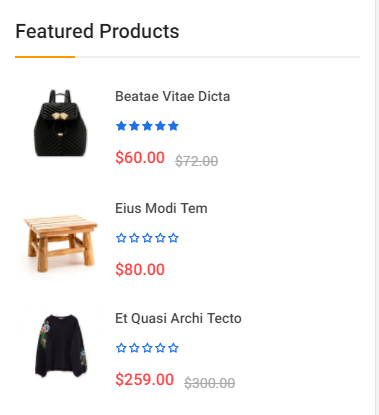
How to add SW Featured Product element into your page?
To add this element to your page, please follow steps as below:
- Open your page and choose Edit with Visual Composer.
- Click on Add element icon of Visual Composer, then choose SW Featured Product.
- Hover on this element and click on Pecil icon to edit it.
- After that, configure element options then Save change for this element.
- Preview the page and Update to save the change for this page.
SW Featured Product Settings
With this element, there are various options for you to configure as your expectation.
See screenshot: Backend Settings
- Title: Enter text used as widget title located above content element.
- Product Title Length: Set product title length as you want.
- Category: Choose product category for this element.
- Template: Choose style for this element.
- Banner Image: Upload banner image for element.
- Number of products to slide: Set number of products to slide.
- Number of posts to show: Set number of products to show.
- Extra class name: If you wish to style particular content element differently, then use this field to add a class name and then refer to it in your css file.
Product Settings for this elements:
To have the style and information as in the demo, you need to do some configuration for products.
- Product Settings: You should pay attention to options including Product Title, Product Image, Product Location and Price. See screenshot: Backend Settings
Info For more detail, you can see the Product Settings in Product part in Basic Settings for more detail.
This element helps you to display most viewed product as slider in the page. After installing the theme and required plugins, this SW Most Viewed Product element will be available in your site.
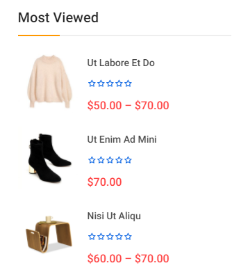
How to add SW Most Viewed Product element into your page?
To add this element to your page, please follow steps as below:
- Open your page and choose Edit with Visual Composer.
- Click on Add element icon of Visual Composer, then choose SW Most Viewed Product.
- Hover on this element and click on Pecil icon to edit it.
- After that, configure element options then Save change for this element.
- Preview the page and Update to save the change for this page.
SW Most Viewed Product Settings
With this element, there are various options for you to configure as your expectation.
See screenshot: Backend Settings
- Title: Enter text used as widget title located above content element.
- Product Title Length: Set product title length as you want.
- Category: Choose product category for this element.
- Template: Choose style for this element.
- Banner Image: Upload banner image for element.
- Number of products to slide: Set number of products to slide.
- Number of posts to show: Set number of products to show.
- Extra class name: If you wish to style particular content element differently, then use this field to add a class name and then refer to it in your css file.
Product Settings for this elements:
To have the style and information as in the demo, you need to do some configuration for products.
- Product Settings: You should pay attention to options including Product Title, Product Image, Product Location and Price. See screenshot: Backend Settings
Info For more detail, you can see the Product Settings in Product part in Basic Settings for more detail.
This element helps you to display product brands as slider in the page. After installing the theme and required plugins, this SW Brand element will be available in your site.
How to add SW Brand element into your page?
To add this element to your page, please follow steps as below:
- Open your page and choose Edit with Visual Composer.
- Click on Add element icon of Visual Composer, then choose SW Brand.
- Hover on this element and click on Pecil icon to edit it.
- After that, configure element options then Save change for this element.
- Preview the page and Update to save the change for this page.
SW Brand Settings
With this element, there are various options for you to configure as your expectation.
See screenshot: Backend Settings
- Title: Enter text used as widget title located above content element.
- Categories: Choose Categories Brand you want to display.
- Style: Choose style for this element.
- Order By: Set the order of product by Name, Date, Author, ID, Modified or others.
- Order: Set product order by Ascending or Descending.
- Number Of Post: Set number of product posts to appear in your site.
- Number row per column: Set number of product posts to appear per row/colum in your site.
- Number of Columns ... : Set number of column appearing on each screen size.
- Speed: Set speed for slider.
- Auto Play: Choose True to have slider plays automatically and choose False for not automatically play.
- Interval: Set the interval time for slider auto plays.
- Layout: Choose display layout for the element.
- Total Items Slided: Choose total item slided.
Brand Settings for this elements:
To have the style and information as in the demo, you need to do some configuration for Categories Brand in Product.
- Categories Brand Settings: Product categories brand should be created first, after that you can assign in the element. Please pay attention to add the Brand Image then it will appear in your site. See screenshot: Backend Settings
Info For more detail, you can see the Brand Settings in Product part in Basic Settings for more detail.
This element helps you to display blog post of a category as slider in the page. After installing the theme and required plugins, this SW Responsive Post Slider element will be available in your site.
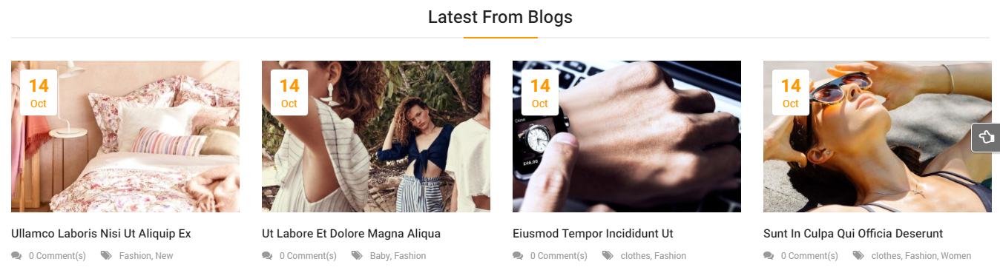
How to add SW Responsive Post Slider element into your page?
To add this element to your page, please follow steps as below:
- Open your page and choose Edit with Visual Composer.
- Click on Add element icon of Visual Composer, then choose SW Responsive Post Slider.
- Hover on this element and click on Pecil icon to edit it.
- After that, configure element options then Save change for this element.
- Preview the page and Update to save the change for this page.
SW Responsive Post Slider Settings
With this element, there are various options for you to configure as your expectation.
See screenshot: Backend Settings
- Title: Enter text used as widget title located above content element.
- Description: Enter the description of the elements. It will appear below the title.
- Category filter: Choose categories including post you want to show.
- Excerpt length (in words): Set the number of character of post title.
- Order By: Set the order of product by Name, Date, Author, ID, Modified or others.
- Order: Set product order by Ascending or Descending.
- Number Of Post: Set number of product posts to appear in your site.
- Number row per column: Set number of product posts to appear per row/colum in your site.
- Number of Columns ... : Set number of column appearing on each screen size.
- Speed: Set speed for slider.
- Auto Play: Choose True to have slider plays automatically and choose False for not automatically play.
- Interval: Set the interval time for slider auto plays.
- Layout: Choose display layout for the element.
- Total Items Slided: Choose total item slided.
Post Settings for this elements:
To have the style and information as in the demo, you need to do some configuration for post and category.
- Category Settings: Product category should be created first, after that you can assign in the element. See screenshot: Backend Settings
- Post Settings: You should pay attention to options including Post Title, Post Category, Featured Image, and Sale Price. See screenshot: Backend Settings
This element helps you to show slider and beautify your website. After installing the theme and required plugins, this Revolution Slider element will be available in your site.
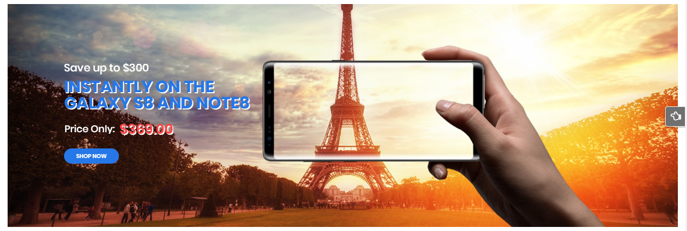
How to add Revolution Slider element into your page?
To add this element to your page, please follow steps as below:
- Open your page and choose Edit with Visual Composer.
- Click on Add element icon of Visual Composer, then choose Revolution Slider.
- Hover on this element and click on Pecil icon to edit it.
- After that, choose slider you want and do other configurations and Save change for this element.
- Preview the page and Update to save the change for this page.
Revolution Slider Settings
With this element, there are various options for you to configure as your expectation. See screenshot: Backend Settings
- Title: Enter text used as widget title located above content element.
- Revolution Slider: Choose slider created in Slider Revolution.
- Extra class name: Add Extra class name to style the element. The class name is refered in custom CSS.
How to Edit Revolution Slider?
To edit Revolution Slider, please follow steps as below:
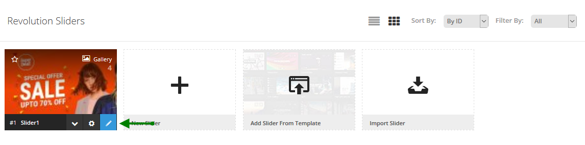
- In the admin page, go to Slider Revolution.
- Click on Edit icon of the slide you want to edit to go to Edit page.
- In the slider Edit page, you can edit as your expectation.
- After all, save the change and check in your site.
InfoYou can see Slider Revolution WordPress 5.x Documentation and Tutorial Videos for more detail.
This element helps you to add single image as banner in the page. After installing the theme and required plugins, this Single Image element will be available in your site.
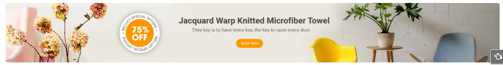
How to add Single Image element into your page?
To add this element to your page, please follow steps as below:
- Open your page and choose Edit with Visual Composer.
- Click on Add element icon of Visual Composer, then choose Single Image.
- Hover on this element and click on Pecil icon to edit it.
- After that, choose image you want and do other configurations then Save change for this element.
- Preview the page and Update to save the change for this page.
Single Image Settings
With this element, there are various options for you to configure as your expectation.
General
See screenshot: Backend Settings
- Title: Enter text used as widget title located above content element.
- Image source: Choose Image source as Media Library, External Link or Featured Image.
- Image: If you choose Image source as Media Libraly, you can load image from library here.
- External link: If you choose Image source as External Link, you can insert the image link here.
- Image size: You can set image size in this option as "thumbnail", "medium", "large", "full" or other sizes defined by theme. Alternatively enter size in pixels (Example: 200x100 (Width x Height)).
- Add caption?: Choose Yes to add caption of this image
- Image alignment: Select image alignment as Left, Right or Center.
- Image style: Choose style image display style as Default, Rounded, Bordered, Outline, Shadow or others.
- On click action: Choose action for click action on Image including Open custom link, Link to large image, Zoom, or open Prettyphoto.
- Image Link: If you set On click action as Open customlink, enter the link target here.
- Link Target: Choose to open Image link in Same window or Open in new window.
- CSS Animation: Select type of animation for element to be animated when it "enters" the browsers viewport (Note: works only in modern browsers).
- Element ID: Enter element ID (Note: make sure it is unique and valid according to w3c specification).
- Extra class name: Add Extra class name to style the element. The class name is refered in custom CSS.
Design Options
See screenshot: Backend Settings
- CSS box: In the CSS box, you can add margin, border and padding to this element.
- Border color: Select color for the border of this element.
- Border style: Choose style for the border of this element.
- Border radius: Configure the radius for the border of this element.
- Background: Select background color for this element.
- Image upload button: Upload image as bacground color for this element.
- Dropdown options: Choose style for background image upload above as Cover, Theme defaults, Contain, No repeat or Repeat.
- Box controls: Choose Sinplify controls or not.
Info To have image banner beautifully in your site, you should choose the one having the same size as in the demo.
This element helps you to add raw html for more information with beautiful style in the page. After installing the theme and required plugins, this Raw HTML element will be available in your site.
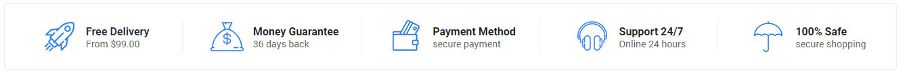
How to add Raw HTML element into your page?
To add this element to your page, please follow steps as below:
- Open your page and choose Edit with Visual Composer.
- Click on Add element icon of Visual Composer, then choose Raw HTML.
- Hover on this element and click on Pecil icon to edit it.
- After that, add HTML and do other configurations then Save change for this element.
- Preview the page and Update to save the change for this page.
Raw HTML Settings
With this element, there are various options for you to configure as your expectation.
General
See screenshot: Backend Settings
- Raw HTML: Enter HTML content you want to add in your page.
- Element ID: Enter element ID (Note: make sure it is unique and valid according to w3c specification).
- Extra class name: Add Extra class name to style the element. The class name is refered in custom CSS.
Design Options
See screenshot: Backend Settings
- CSS box: In the CSS box, you can add margin, border and padding to this element.
- Border color: Select color for the border of this element.
- Border style: Choose style for the border of this element.
- Border radius: Configure the radius for the border of this element.
- Background: Select background color for this element.
- Image upload button: Upload image as bacground color for this element.
- Dropdown options: Choose style for background image upload above as Cover, Theme defaults, Contain, No repeat or Repeat.
- Box controls: Choose Sinplify controls or not.
Info For this one, please make sure that you use the right HTML in your site. You can edit the link and content as your expectation. See screenshot: Settings
This element helps you to add text, image and form for more information with beautiful style in the page. After installing the theme and required plugins, this Text Block element will be available in your site.
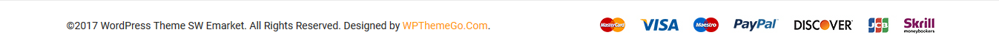
How to add Text Block element into your page?
To add this element to your page, please follow steps as below:
- Open your page and choose Edit with Visual Composer.
- Click on Add element icon of Visual Composer, then choose Text Block.
- Hover on this element and click on Pecil icon to edit it.
- After that, add HTML and do other configurations then Save change for this element.
- Preview the page and Update to save the change for this page.
Text Block Settings
With this element, there are various options for you to configure as your expectation.
General
See screenshot: Backend Settings
- Text Block: Enter HTML content you want to add in your page.
- Element ID: Enter element ID (Note: make sure it is unique and valid according to w3c specification).
- CSS Animation: Select type of animation for element to be animated when it "enters" the browsers viewport (Note: works only in modern browsers).
- Extra class name: Add Extra class name to style the element. The class name is refered in custom CSS.
Design Options
See screenshot: Backend Settings
- CSS box: In the CSS box, you can add margin, border and padding to this element.
- Border color: Select color for the border of this element.
- Border style: Choose style for the border of this element.
- Border radius: Configure the radius for the border of this element.
- Background: Select background color for this element.
- Image upload button: Upload image as bacground color for this element.
- Dropdown options: Choose style for background image upload above as Cover, Theme defaults, Contain, No repeat or Repeat.
- Box controls: Choose Sinplify controls or not.
Info For this one, please make sure that you use the right HTML in your site. You can edit the link and content as your expectation. See screenshot: Settings
This element helps you to add text, image and form for more information with beautiful style in the page. After installing the theme and required plugins, this WP Tag Cloud element will be available in your site.
How to add WP Tag Cloud element into your page?
To add this element to your page, please follow steps as below:
- Open your page and choose Edit with Visual Composer.
- Click on Add element icon of Visual Composer, then choose WP Tag Cloud.
- Hover on this element and click on Pecil icon to edit it.
- After that, add HTML and do other configurations then Save change for this element.
- Preview the page and Update to save the change for this page.
WP Tag Cloud Settings
With this element, there are various options for you to configure as your expectation.
See screenshot: Backend Settings
- Title: Enter title for this element.
- Taxonomy: Choose source for tag cloud.
- Element ID: Enter element ID (Note: make sure it is unique and valid according to w3c specification).
- Extra class name: Add Extra class name to style the element. The class name is refered in custom CSS.
GENERAL SETTINGS
To set up Home Page or Front Page for your website, please follow steps as below:
- Log in to your site in the backend.
- Navigate to Settings > Reading.
- In the Reading Settings, select A Static Page option.
- Select the page you want as home page in Front Page dropdown list.
- Now Save Changes and check your site again.
Info For more detail, you can see the WordPress Documentation for this problem: Creating a Static Front Page.
To edit the page title in our themes, you can follow steps as below:
Step 1: Login into the Dashboard of your site.
Step 2: Go to Pages > All Pages and open the page that you want to edit the title. It’s ussually the Home Page.
Step 3: Scroll down to the Yoast SEO area and click on Edit Snippet.
Step 4: Now, you can edit the Page Title as you want. In addition, you can edit the keywords for it there too.
After all, you can clear all cache of your site, browser and server to check the result.
Info For more detail, you can see the WordPress Documentation for this problem: How to Edit the Page Title in Your Site? .
To change logo/favicon for your website, please follow steps as below:
- Log in to your site in the backend.
- Navigate to Appearance > Theme Options.
- In tab General, you can Upload Favicon Image and Upload Logo for your site. For the logo, we recommend you to use the one with same size as the logo in the demo.
- You can also need to change in Page Metabox of home page. If you want the page to be like in all your webstie, you can choose No select for this option, the config in the Theme Options will be applied.
- Now Save Changes and check your site again.
To change Color Schemes for your website, please follow steps as below:
- Log in to your site in the backend.
- Navigate to Appearance > Theme Options.
- In tab Schemes, you can choose Color Scheme for your site.
- You can also need to change in Page Metabox of home page. If you want the page to be like in all your webstie, you can choose No select for this option, the config in the Theme Options will be applied.
- Now Save Changes and check your site again.
To change logo and color scheme for Home page in our themes, you can follow steps as below:
Step 1: Login into the Dashboard of your site.
Step 2: Go to Pages > All Pages and open Home page of your site.
Step 3: Scroll down to the Page Metabox area in the end.
Step 4: Now, you will see options to change or remove Logo image and Color schemes there. If you want to have a special or difference in Color, Logo, Header Style, Footer Style or Typography for a page, you can use Page Metabox to custom as you want. If not, you can choose No Select for Options in Page Metabox, the settings in the Theme Options will be applied.
Step 5: Save the page, clear all cache then check your site again.
Info For more detail, you can see the WordPress Documentation for this problem: Why I could not Change Logo & Color in Home Page?.
To set up the Popup for your website, please follow steps as below:
- Log in to your site in the backend.
- Navigate to Appearance > Theme Options.
- In tab Popup Config, choose Active Popup Subscribe the configure the options listing below.
- Now Save Changes and check your site again.
To enable the Maintaince Mode for your website, please follow steps as below:
- Log in to your site in the backend.
- Navigate to Appearance > Theme Options > Maintaince Mode.
- Now, choose Enable Maintaincece Mode, and configure other options listing below.
- Now Save Changes and check your site again.
To configure header for your page, please follow steps as below:
- In your site at the backend, please go to Appearance > Theme Options > Header & Footer to choose the Header style as you want.
- Navigate to Appearance > Widgets then configure the Widget elements of the sections included in the Header Style you choose.
- If you don't want any elements to appear in your site, you can Delete it.
- You can also need to change in Page Metabox of home page. If you want the page to be like in all your webstie, you can choose No select for this option, the config in the Theme Options will be applied.
- After all, please check your site again to see the result.
Info For more detail, you can see the Header Settings in Basic Settings for more detail.
To have the megamenu in your site, please follow steps as below:
- In your site at the backend, please go to Appearance > Menu and create your menu and assign it to Primary Menu location.
- In Appearance > Theme Options > Navbar Options, choose to use Megamenu and choose Location as Primary.
- After all, please check your site again to see the result.
Info For more detail, you can see the Menu Configuration part in Basic Settings for more detail.
To have the vertical menu in your site, firstly you need to have Header Style including this type of menu. After that, please follow steps as below:
- In your site at the backend, please go to Appearance > Menu and create your menu and assign it to Vertical Menu location.
- In Appearance > Theme Options > Navbar Options, choose Location as Vertical Menu.
- After all, please check your site again to see the result.
Info For more detail, you can see the Menu Configuration part in Basic Settings for more detail.
After installing the Quickstart or importing demo data, the demo pages will be available in your site. Now you can edit them to meet your expectation.
- Log in to your site in the backend.
- You can edit the elements here by going to Pages > All Pages and choose page you want to edit it with Visual Composer.
- Now, you can edit the page elements with Visual Composer and other configurations easily. Also, you can also edit this page from the front end.
- You can also edit with Visual Composer in the front end of the page. After all, click to Save change and check your site.
Info For more detail, you can see the Page Settings part in Basic Settings for more detail.
After installing the Quickstart or importing demo data, the demo pages will be available in your site. Now you can edit them to meet your expectation.
- Log in to your site in the backend.
- Navigate to Pages > All Pages and choose page you want to edit it with Visual Composer.
- Now, you can click on Add Element button, choose the ones you want and configure it.
- After all, click to Save change and check your site.
Info For more detail, you can see the Page Settings part in Basic Settings for more detail.
Bosmarket supports you to add the breadcrumb in your pages including blog, shop, contact, about us and others. To change the breadcrumb background image, please follow steps as below:
- In your site at the backend, please go to Appearance > Theme Options > General
- Upload the image you want in option Breadcrumb Background.
- If you don't want the Breadcrumb to appear in your site, please go to Appearance > Theme Options > Advanced then choose option Turn Off Breadcrumb.
- After all, please save and check your site again to see the result.
Info For more detail, you can see the Footer Settings part in Bosmarket Theme Options for more detail.
To configure footer for your page, please follow steps as below:
- In your site at the backend, please go to Appearance > Theme Options > Header & Footer to choose the Footer style as you want.
- Navigate to Pages > All Pages > Footer Style x then configure the elements with Visual Composer as you want.
- If you don't want any elements to appear in your site, you can Delete it.
- You can also need to change in Page Metabox of home page. If you want the page to be like in all your webstie, you can choose No select for this option, the config in the Theme Options will be applied.
- For Copyright, you also need to change in option Copyright text in Appearance > Theme Options > Header & Footer.
- After all, please check your site again to see the result.
Info For more detail, you can see the Footer Settings part in Basic Settings for more detail.
DEMO PAGES
After installing quickstart or Bosmarket theme with Demo data importation, this home page will be available in your site. Let's see the layout position of elements for this page and how to create/edit it.
How to create/edit this page:
Info Before creating the page, you need to read through all the Background Knowledge and have Basic Settings about the theme.
To create or edit this page, please follow steps by steps as below:
- Go to Pages > Add New to create a new page. If you edit this page, go to All pages then choose this one to edit it.
- In the Page Metabox, choose Home Template as Home Page 1 to have this page layout. This page uses Header Style 1, Footer Style 1 and Footer Copyright Style 1.
- Currently, this page applies the options in Page Metabox for Logo, Color Scheme, Header, Footer, and Footer Copyright. If you don't want it to be different in your site, you can choose No Select here then the settings in the Theme Options will be applied.
- Click Backend Editor to edit your site with Visual Composer.
- Add theme elements to the page. To edit, you can click on the edit button on each elements to configure as you want.
- Add your page to menu if it's a new created one.
- After that, you can Preview to see the change and Update to save the page settings.
You can see the Backend Settings of this home page here: See Screenshot: Backend Settings
After installing quickstart or Bosmarket theme with Demo data importation, this home page will be available in your site. Let's see the layout position of elements for this page and how to create/edit it.
How to create/edit this page:
Info Before creating the page, you need to read through all the Background Knowledge and have Basic Settings about the theme.
To create or edit this page, please follow steps by steps as below:
- Go to Pages > Add New to create a new page. If you edit this page, go to All pages then choose this one to edit it.
- In the Page Metabox, choose Home Template as Home Page 2 to have this page layout. This page uses Header Style 2, Footer Style 1 and Footer Copyright Style 1.
- Currently, this page applies the options in Page Metabox for Logo, Color Scheme, Header, Footer, and Footer Copyright. If you don't want it to be different in your site, you can choose No Select here then the settings in the Theme Options will be applied.
- Click Backend Editor to edit your site with Visual Composer.
- Add theme elements to the page. To edit, you can click on the edit button on each elements to configure as you want.
- Add your page to menu if it's a new created one.
- After that, you can Preview to see the change and Update to save the page settings.
You can see the Backend Settings of this home page here: See Screenshot: Backend Settings
After installing quickstart or Bosmarket theme with Demo data importation, this home page will be available in your site. Let's see the layout position of elements for this page and how to create/edit it.
How to create/edit this page:
Info Before creating the page, you need to read through all the Background Knowledge and have Basic Settings about the theme.
To create or edit this page, please follow steps by steps as below:
- Go to Pages > Add New to create a new page. If you edit this page, go to All pages then choose this one to edit it.
- In the Page Metabox, choose Home Template as Home Page 3 to have this page layout. This page uses Header Style 3, Footer Style 2 and Footer Copyright Style 2.
- Currently, this page applies the options in Page Metabox for Logo, Color Scheme, Header, Footer, and Footer Copyright. If you don't want it to be different in your site, you can choose No Select here then the settings in the Theme Options will be applied.
- Click Backend Editor to edit your site with Visual Composer.
- Add theme elements to the page. To edit, you can click on the edit button on each elements to configure as you want.
- Add your page to menu if it's a new created one.
- After that, you can Preview to see the change and Update to save the page settings.
You can see the Backend Settings of this home page here: See Screenshot: Backend Settings
After installing quickstart or Bosmarket theme with Demo data importation, this home page will be available in your site. Let's see the layout position of elements for this page and how to create/edit it.
How to create/edit this page:
Info Before creating the page, you need to read through all the Background Knowledge and have Basic Settings about the theme.
To create or edit this page, please follow steps by steps as below:
- Go to Pages > Add New to create a new page. If you edit this page, go to All pages then choose this one to edit it.
- In the Page Metabox, choose Home Template as Home Page 4 to have this page layout. This page uses Header Style 4, Footer Style 3 and Footer Copyright Style 3.
- Currently, this page applies the options in Page Metabox for Logo, Color Scheme, Header, Footer, and Footer Copyright. If you don't want it to be different in your site, you can choose No Select here then the settings in the Theme Options will be applied.
- Click Backend Editor to edit your site with Visual Composer.
- Add theme elements to the page. To edit, you can click on the edit button on each elements to configure as you want.
- Add your page to menu if it's a new created one.
- After that, you can Preview to see the change and Update to save the page settings.
You can see the Backend Settings of this home page here: See Screenshot: Backend Settings
MOBILE LAYOUT
Bosmarket theme supports you with Mobile Layout on iPhone screens size. To use it in your site, there are some points that you should pay attention to.
- You need to create Menu for Mobile Layout. Usually, there is Vertical Menu and Mobile Menu.
- The Mobile Layout should be enable in Theme Options > Mobile Layout. Also, you can configure the Mobile Logo, Mobile Layout Content, Mobile Header and Footer
- The Page Mobile Layout should be created then it will be applied as the Mobile Layout Content for your site.
- Mobile Filter: You need to create widgets in Filter Mobile section then the Search on Mobile Header can work normally. See screenshot: Backend Settings .
Info If you do not use the Mobile Layout for your site, the Responsive Mode will automatically applied.
Important!
- We develop mobile layout based on data of Home Page 1. Therefore, if you import Home Page 1, you will have mobile layout completely like in our demo.
- If you import other Home Page layout (not Home Page 1), after the importation, you will need to go to the Home Mobile to configure the category assigned to elements there. After that, you will have your site as in the demo.
Info You can see Menu Configuration in Basic Settings for more information about Bosmarket menus.
Mobile Menus for Bosmarket mobile layout
Bosmarket supports Mobile Layout with different Mobile Menu position as below:
- Vertical Menu: This menu is in Header of Mobile Layout. After clicking on mobile menu button, you can see it. See screenshot: Demo - Backend Settings
- Mobile Menu: This menu is in Menu Footer of Mobile Layout. After clicking on MORE button, you can see it. See screenshot: Demo - Backend Settings
Why mobile layout is not applied?
If you use cache plugin and the cache for mobile is enabled, the responsive mode will be applied.
Suggesstion:
Cache plugin is very important to a site performance, so it's essential for your site. So how to both have Cache Plugin and Mobile Layout works in your site?
The answer is to choose a plugin that lets you turn off the cache on mobile like WP Fastest Cache. Our mobile layout is minimized the code and it works fast on mobile then there is no need to use cache anymore.
After installing quickstart or Bosmarket theme with Demo data importation, this home page will be available in your site. Let's see the layout position of elements for this page and how to create/edit it.
How to create/edit this page:
Info Before creating the page, you need to read through all the Background Knowledge and have Basic Settings about the theme.
To create or edit this page, please follow steps by steps as below:
- Go to Pages > Add New to create a new page. If you edit this page, go to All pages then choose this one to edit it.
- Click Backend Editor to edit your site with Visual Composer.
- Add theme elements to the page. To edit, you can click on the edit button on each elements to configure as you want.
- Add your page to mobile menu if it's a new created one.
- After that, you can Preview to see the change and Update to save the page settings.
- Now, you need to go to Appearance > Theme Options > Mobile Layout to assign this page to Mobile Layout Content. You can also change Mobile Logo and configure the Mobile Header and Footer Style there. This layout uses Mobile Header Style 1 and Mobile Footer Style 1.
You can see the Backend Settings of this home page here: See Screenshot: Backend Settings
After installing quickstart or Bosmarket theme with Demo data importation, this home page will be available in your site. Let's see the layout position of elements for this page and how to create/edit it.
How to create/edit this page:
Info Before creating the page, you need to read through all the Background Knowledge and have Basic Settings about the theme.
To create or edit this page, please follow steps by steps as below:
- Go to Pages > Add New to create a new page. If you edit this page, go to All pages then choose this one to edit it.
- Click Backend Editor to edit your site with Visual Composer.
- Add theme elements to the page. To edit, you can click on the edit button on each elements to configure as you want.
- Add your page to mobile menu if it's a new created one.
- After that, you can Preview to see the change and Update to save the page settings.
- Now, you need to go to Appearance > Theme Options > Mobile Layout to assign this page to Mobile Layout Content. You can also change Mobile Logo and configure the Mobile Header and Footer Style there. This layout uses Mobile Header Style 2 and Mobile Footer Style 1.
You can see the Backend Settings of this home page here: See Screenshot: Backend Settings
ADMIN OPTIONS
- Set the Shop & product pages in WooCommerce > Settings > Product > Display. See screenshot: Product Display
- Set the Checkout process in WooCommerce > Settings > Checkout > Checkout options. See screenshot: Checkout process
Info For more detail about this plugin, you can check the WooCommerce Documentation: here.
- Go to Dokan > Settings to configure General Settings, Selling Options, Withdraw Options, Page Settings and Appearance. See screenshot: Dokan Settings
- Go to User Profiles to add some Dokan Options like Store Name, Address, Banner Image and others. See screenshot: Checkout process
Info You need to purchase Pro version for this plugin. You can check Documentation and FAQs for more detail about it.
- Go to WooCommerce > WC Vendors to configure General Settings, Products, Capabilities, Pages and Payments. See screenshot: Dokan Settings
- Go to User Profiles to add some WC Vendors Options like Shop Name, Address, Description and others. See screenshot: Checkout process
Info You need to purchase Pro version for this plugin. You can check Documentation for more detail about it.
Bosmarket theme supports YITH Plugins with feature Wishlist and Compare. After installing the theme, you need to do some configurations as below:
- Configure General Settings for Compare in YITH Plugins > Compare. See screenshot: Compare
- Configure General Settings for Wishlist in YITH Plugins > Wishlist. See screenshot: Wishlist
After installing the theme, the Compare and Wishlist button may be duplicated. To remove this bug, you need to do some configurations here.
In Bosmarket, some contact forms are used with Contact Form 7. Firstly, you need to create contact form in Contact > Add New for your site.
- Contact form 1. See screenshot: Form ID 738
- Contact form mobile See screenshot: Form ID 2036
[text* your-name placeholder "Your name*"]
[email* your-email placeholder "Your email*"]
[text your-subject placeholder "Your subject*"]
[textarea your-message subject "Your message *"]
[submit "Send message"]
[text* your-name placeholder "Full name"][email* your-email placeholder "Email"][text your-phone placeholder "Phone Number"][textarea your-message placeholder "Writer your comments"]
[submit "Send message"]
Info For more detail about this plugin, you can check the Contact Form 7 Documentation: here.
TRANSLATION
To use Loco in Bosmarket, you can install Loco Translate first. After that, you can use Loco to translate Bosmarket theme and plugins including SW WooCommerce.
You can follow Beginner's guide for Loco Translate in Bosmarket Theme
FREQUENTLY ASKED QUESTIONS
Yes. Bosmarket supports RTL layout. To have RTL layout, you can go to Appearance > Theme Options > Advanced and change the Direction into Right to Left.
- Firstly, you need to make sure that the Develop Mode has been turned off.
- To speed up your site, we recommend to use plugin WP Fastest Cache: Plugin to speed up your site by creating static html files from your dynamic WordPress blog. Or else, you can use W3 Total Cache: This plugin improves the SEO and user experience of your site by increasing website performance, reducing download times via features like content delivery network (CDN) integration.
Actually, this is not because of the theme but due to the host settings. For this one, you should contact your host to check the Redirect Issues.
Sometimes, there is warning in your site such as:
Fatal error: Allowed memory size of 134217728 bytes exhausted (tried to allocate 72 bytes) in /home/xxx/public_html/wp-content/plugins/lessphp/3rdparty/lessc.inc.php on line 311
This one is caused by the file wp-config.php. To fix theme, please add the line below to this file:
define(‘WP_MEMORY_LIMIT’,’256M’);
Sometimes, there is warning in your site such as:
Warning: Invalid argument supplied for foreach() in /home/xxx/public_html/wp-content/themes/revo/lib/utils.php on line 139
This one is caused by the file wp-config.php. To fix theme, please add the line below to this file:
define(‘FS_METHOD’,’direct’);
To Understanding and Fixing 502 Bad Gateway Errors, you can see this article for more detail:
To Understanding and Fixing 500 Internal Server Error, you can see this article for more detail:
GET SUPPORT FOR BOSMARKET THEME
To help speed along your request, we require that you follow the steps below before submitting a new support ticket. This is for the benefit of everyone and will help make the entire process more efficient. It’s very important and we ask that everyone who posts follow these steps.
Please check the following before you submit a ticket:
- Make sure you are running the latest version of Bosmarket and the latest version of WordPress.
- Always check the changelogs of Bosmarket.
- Check our Documentation and Knowledgebase for the answer to your question.
- Disable any additional 3rd party plugins you may be using to see if it fixes the issue.
- Make sure you’ve cleared all your caches including browser cache, plugin cache and server cache. Browser Cache: this is cache stored by your browser to allow your page content to load faster. Plugin Cache: this is cache specifically from a 3rd party WordPress plugin. and Server Cache: this is cache imposed by your hosting company directly from your server.
After finishing 5 things should do before creating ticket, if the issue remains, you can create a ticket at our Support System.
Please note that your site's information and some screenshots for the issue will be easier for us to get the question and help you faster.
Note Please note that for each item purchase code, only 01 website should be supported. Also, if your license for product support is expired, you should renew it to get our best support service.
Important!
- Once you create a ticket, do NOT reply the ticket via notification email. Any reply via this no-reply-email may be missed because our support team could not read it.
- Our team will check the issue and send you reply in 24 hours (except for weekends and holiday) regarding how complicated the issue is.
- We have only 01 Support System. If you get trouble with it, you can contact us via our email contact@wpthemego.com to get help. However, the first one is more convenience and easier for both of us to follow the issue.
CHANGE LOGS
# Initial Release